This is the story of a kid named Preston. We're going to say more about him here, ultimately, but this is intended to just be a 2-3 line tease for the rest of the story as the reader scrolls down.
Ana Watson looks across the living room of the Colorado Springs house that still doesn’t feel quite like home and sees her son, Preston, sitting stiffly on a brand-new couch. His eyelids flutter, struggling against the seizures that have quaked through his brain every day since he was 3 months old.
“We have a special squirt-squirt we need to do, OK?” Ana tells Preston, adopting a smile as she walks toward him. “You need to be a big boy.”
In her hand, Ana holds the first dose of what she hopes will finally stop the seizures. More than a dozen medicines have already failed, and continuing down the certain path of conventional treatments promises only more misery and maybe even death for Preston. So Ana has chosen uncertainty in the form of this amber oil created in a Boulder County garage.
Just to get to this moment in July, she had to uproot her family and move across the country from North Carolina to Colorado, one of the few places where the new and unregulated treatment is at least somewhat legal. She’s committing a federal crime just for trying.
“Open up,” Ana coos.
Instead, Preston turns his head side to side to avoid the dropper. Squirming on the couch next to his mother, he’s nearly as tall as she is. But hundreds of seizures a day have restrained his development to that of a 2-year-old. He is 12 years old, yet in many ways he’s a 70-pound toddler.
Ana grabs his arm, but he pushes her back. She tackles him and squirts the oil into his mouth, but he coughs it back up. She reaches for her cellphone.
“Help,” Ana writes in a Facebook message to the community of parents who have tried the same treatment. “He is spitting it out and gagging. Can I mix it with food, give rectal? Any suggestions?????”
Ana’s mom, Milly, stirs more medicine into ice cream and brings it over. But Preston won’t eat.
Ana bribes him with his favorite YouTube videos — “I’ll press play if you take a bite.” He still refuses.
She promises him that his little sister, Sydney, will dance if he takes his medicine. “I’m not doing it,” Sydney says.
Ana’s shoulders slump, and Milly tells her to back off.
“You’re overdoing it,” Milly admonishes. “Skipping it is not going to hurt him.”
But Ana’s jaw clenches.
“Why did we even come down here if he’s not going to take it!?” she snaps.
“We can’t force him to take it!” Milly shouts.
“He needs to learn to take it!” Ana says.
Milly walks out of the room, saying they should try later.
“Stop arguing with me!” Ana finally says. “Damn.”
She turns toward Preston, and, as if he senses the tension, the cringe on his face pivots into an awkward smile. He starts to laugh, and she does, too.
“Silly mommy,” he says quietly.
Ana eventually calls a friend, who suggests giving the medicine in emptied pill capsules delivered as a suppository. She grimaces. But she has already been at it for an hour. The odds that seizures will kill Preston increase every year; the damage in his brain may soon be permanent. She is compelled to try.
“OK,” Ana says as she fills the capsules. “It’s not going to be pretty.”
This time, she walks to him without a smile. She leads him into the bathroom and pulls down his diaper. She muscles him close.
Preston squeals. Once. Then again.
“I know!” Ana pleads. “I’m sorry!”
His cries fade to whimpers. His eyelids twitch with another seizure. Ana sits on the toilet, holding him on her lap as he quivers in her arms.
“It’s OK,” she whispers. “It’s OK, Boo-Boo.”
Seven months and 1,600 miles after their journey began, Ana has finally given Preston his first dose of marijuana.
Medical marijuana has made Colorado a promised land for desperate parents trying to save their children.
Children have arrived here nearly lifeless. Families have lived out of motels when they couldn’t find housing. Parents have shown up at a medical marijuana provider’s house in the middle of the night.
At least two children and one woman across the country have died while their families prepared to move to Colorado for medical marijuana. One child who made it here died when the treatment didn’t help her condition enough. Her mother moved back home alone.
But no one knows more than anecdotes because Colorado does not track how many families come to treat their children with medical marijuana — although it’s in the low hundreds — or where they go.
No agency thoroughly regulates the treatment providers, beyond basic licensing. No rules govern the right formulation or dosage of the marijuana extract at the core of the treatment. No studies conclusively document the side effects.
Most important, no one knows how often it works.
A handful of organizations have sprouted in the past couple of years to offer support to parents moving to Colorado and those already here. Communities of families have grown up to provide advice and encouragement and a happy source of friendship.
But, when parents such as Ana Watson arrive with little more than a desperately sick child and a hope to make it better, they walk into uncharted territory. They become part of a medical experiment that plays out in living rooms, not doctors’ offices.
“I can’t be the parent who didn’t try,” said Janea Cox, a mother from Georgia who brought her daughter to Colorado in March for treatment of seizures that left her unable to even breathe on her own. The move meant breaking up her family; her husband remained at home in Georgia.
“Colorado represents hope at this point,” she said. “This is the state of hope.”
A spectrum of illnesses afflict the children coming to Colorado for medical marijuana: cancer, autism, Crohn’s disease. Most, though, are seeking help for incurable forms of childhood epilepsy — diseases with names taken from medical-journal bylines: Dravet syndrome, Lennox-Gastaut syndrome and Doose syndrome.
The migration began just over a year ago, when CNN aired a documentary featuring a Colorado girl named Charlotte Figi, whose constant seizures caused her to stop speaking for months. While taking a form of the marijuana treatment, the seizures subsided, and she bloomed anew into a happy child seen laughing and playing in video clips. News stories began reporting that other children were seeing similarly miraculous results. To parents of kids with severe disorders, the articles seemed almost out of a storybook. So it was fitting that the brothers who grew the marijuana for the kids named their product Charlotte’s Web.
Smaller numbers of children in California and other states have also begun to use marijuana to treat seizures. But what makes Colorado the epicenter is the state’s large medical marijuana system, which allows for kids to be registered patients; the growing community of families with sick children; and the feedback loop of publicity that surrounds the treatment. Every happy story about a family seeing success with cannabis in Colorado pushes another family to move here.
Today, there are 427 children under 18 on the state’s medical marijuana registry, including 13 under 2 years old. That total number is up from just 60 in August 2013, when the documentary aired. More arrive every month.
This is marijuana that often comes in medicine bottles, an oil extract from cannabis plants that is frequently squirted under a patient’s tongue. It’s the opposite of most commercial cannabis. Rather than being high in THC — the plant’s psychoactive chemical — the marijuana is low in THC and rich in CBD, a compound that does not get users stoned but has shown medicinal potential.
The few, small studies of its efficacy, though, are preliminary and even disputed. Federal laws against marijuana have hampered research on CBD for the past four decades. As a result, states have increasingly passed their own laws legalizing CBD, based on little more than stories such as Charlotte Figi’s and the hopes of families following in her path.
An early and oft-reported survey of children on Charlotte’s Web found that 80 percent who tried it eliminated at least three of every four of their seizures. Now, even one of the specialists involved in that study questions whether it was overly optimistic. Subsequent studies have suggested the response rate might be closer to 30 percent or, perhaps, even lower.
It’s not just that parents are taking a gamble by moving to Colorado. It’s that they don’t even know the odds.
“When these kids come, we hear a lot about it,” said Dr. Larry Wolk, head of the Colorado health department and a skeptic of the treatment’s success. “They get their CBD oil or their Charlotte’s Web. And if they respond, we continue to hear about it. If they don’t, they quickly disappear.”
Like all of the parents coming to Colorado in search of a cure, Ana Watson hopes hers will become a success story. Staying in North Carolina offered no hope for Preston. Still, she can’t predict what lies ahead.
The journey would be harder and more complicated than she ever imagined.
Preston’s baby book begins with pictures from a sonogram.
“It’s a boy!” the sticker on the page proclaims.
Turn the page, and there’s a picture of Preston in a white onesie. Then a picture of Preston sitting in a kid-sized Jeep.
On the next page is a picture of Preston with his head swaddled in gauze, a thick bundle of electrical wires poking out of the top of the wrapping like a bizarre ponytail.
“The Journey” is the title of this new section in the book.
It sounds so much better than calling it an ordeal.
Ana was only 19 when she learned she was pregnant with Preston. She was a college freshman who had to take a break from school and live with her parents for a few months in rural Whitsett, N.C., while she prepared for motherhood. Her pregnancy was normal, aside from the delicate tremors she sometimes thought she felt in her womb. Her high school sweetheart, Preston’s father, drifted out of her life. He has never seen Preston in person.
After Preston’s birth, the doctors told Ana that his strange leg twitches were common — the result of underdeveloped muscles. It was three months later that she learned the doctors were wrong.
She was giving Preston a bath — not his first, not unusual. But then his eyes rolled back in his head and his face went white and his little body began to shake and Ana was certain he was dying. At the hospital, doctors quickly sent her home. Lots of kids have random seizures that never recur, they said. But Preston’s did.
Ana doesn’t remember what Preston’s first word was. What she does remember is that first word arrived right on time. As did his first crawls. And his first steps.
It wasn’t until his second year of life that Ana began to notice the toll the seizures were taking. When other kids Preston’s age were learning more words and stringing them into sentences, he didn’t. When walking and grasping led to running and catching for other children, it didn’t for Preston. It was as though his life ground to a stop, even as time ticked on.
The neurologists were baffled and kept hunting for new medicines.
They started with a drug called Depakote when Preston was 3 months old. But the seizures continued — as did the new treatments: Klonopin and Felbatol and Keppra. Zonegran and Topamax and Diamox and Banzel. Vitamin infusions. A special high-fat diet. An implanted electrical nerve stimulator. There were two other drugs not yet fully approved by the federal government that cost hundreds of dollars a month. There was another that has also been suggested for use in executions.
The government safety sheets for each drug listed dozens of side effects. Tremors. Problems with walking or coordination. A potentially fatal rash. Panic attacks. Thoughts of suicide. Aggression.
To Ana, it sometimes seemed as if what epilepsy didn’t take from her son, the drugs would. But she also knew that just one year of uncontrolled seizures meant a 1 percent chance of dying. The longer Preston’s seizures ran riot, the likelier epilepsy would kill him.
“You know you’re fighting for your child,” she said. “You just do whatever it takes to get what you need for your child. People slack off. You have to stay on top of them.”
Being Preston’s mother taught her not to cry because tears won’t make her son better. For her, there is a process: Try one thing, then move on to the next. Lessons can be learned and applied.
So Ana kept searching for a cure.
Her bookshelf at home charted the journey and spoke to her struggle. First came “What to Expect in the First Year.” Then “Keeping Faith.” Then “Delmar’s Drug Reference for Health Care Professionals.” Then “Three Weeks to Say Goodbye.”
Ana married, and Sydney was born. She and her husband fell into debt, in part because of medical bills before Preston qualified for Medicaid. Their marriage collapsed under the stress, and Ana moved back in with her parents. She tried working full time, then cut back to part time.
It wasn’t until Preston was 6 years old that doctors finally put a name to his condition: Dravet syndrome. And in some ways, that was worse than not knowing at all because it meant there was no cure to find.
At the North Carolina Children’s Hospital in Chapel Hill in May, Dr. Robert Greenwood hustled into the meeting room wearing a tie covered with Dr. Seuss characters.
“It’s been a constant struggle of trying to limit the number of seizures he has,” Greenwood said of Preston, who at age 1 started as a patient of Greenwood’s. “We have tried literally everything.”
As a pediatric neurologist, Greenwood had treated hundreds of kids with epilepsy in his 37-year career. But Preston’s case was a unique challenge.
“In his case, the biggest problem is he has seizures every day,” Greenwood said. “Multiple seizures. At times, he could walk down the hall and you could see 10 to 20 seizures happening, little jerks. So he was literally having seizures all of the time.”
Dravet isn’t like other epilepsies.
While some can be treated by targeting the specific areas of the brain where the seizures’ electrical overloads originate, Dravet’s seizures come from everywhere, the result of a genetic mutation that occurs in every nerve cell in the brain.
Some epilepsies respond well to generalized anti-seizure drugs. But the specific genetic mutation of each Dravet patient is different, meaning what works for some won’t work for others. Preston has at least four different kinds of seizure types, and they varied in severity and frequency as he grew older.
There are the grand mals, full of violent convulsing that can last minutes, which Preston falls into about once a week. But much more common are the little eye flutters. In medical terms, they are called myoclonic seizures. Ana calls them “blinkies.” They look as though Preston is on the verge of sneezing.
He can have hundreds of blinkies a day. And, though they usually pass gently, each one is like an eraser across his brain’s chalkboard. Over and over, new development is wiped clean by the seizures. So, over and over, he learns the same things.
At 12 years old, Preston cannot spell his name. He cannot reliably count to 10. He is still learning his colors. He doesn’t know his mom’s name or where he lives or how to call home if he gets lost. He wobbles when he walks and falls over easily.
Sometimes, Greenwood and Ana would find a medicine that worked for Preston. The seizures would lessen and Preston would start to walk more steadily. But, just as quickly, Preston’s brain would rewire itself back to a broken state and the seizures would return.
Sitting in the hospital meeting room, Greenwood said there was little more he could do for Preston with the medicines available. Without something new, Preston’s seizures would continue into adulthood — assuming he didn’t die before then.
Asked whether Preston would ever be able to speak a complete sentence, Greenwood’s eyes lit up with the idea, then quickly dimmed.
“That would be really nice if he got that far,” he said, “but there’s not much evidence right now he’s moving toward that.”
Preston’s eyes slowly opened somewhere under the fluff of his mother’s comforter.
“Time to get up, Boo-Boo,” Ana said to him. “Come on.”
A voice tiptoed back to her with the peanut-butter-mouth slur of a child’s early words: “Wuh moh minuh.”
“OK,” Ana said, “One more minute.”
It was about a month before the move away from their little brick house in Greensboro, N.C., and, sometime in the night before, Preston left his own bed and sleepwalked into Ana’s. Sydney was already there. When Ana woke before dawn, she was nestled between children.
Once begun, the morning ticked along with practiced precision. Ana made the fried potatoes Preston only ever wants for breakfast. Eight-year-old Sydney quietly dressed and got ready on her own, until it was time to ask mom to fix her ponytail.
Finally dragging Preston from bed, Ana sat him in his skull-and-crossbones pajamas in front of the television and turned on a video of Barney the dinosaur. Sydney walked by and scrunched up her face. She had already outgrown Barney.
But Preston watched rapturously, planting his elbows onto his knees and his head into his hands. His eyes are a deep walnut color and are framed by long eyelashes. Brown hair swirls atop his head in casual rebellion. His smile is all in the top lip, pulling up past his gum line to reveal a row of glimmering teeth.
Slowly working his way through the potatoes, Preston’s hands stopped and his eyelids flickered for a few seconds before popping back open. The first seizure of the day had come and gone.
Over the fireplace hung a photo of Preston in a straw cowboy hat. He’s shirtless, leaning onto his left elbow. His mouth is closed and his eyes set in a stoic glare, and he appears startlingly mature — a boy trying to look like a man trying to look like a rock star.
There are times, Ana said, when she can almost see what Preston could become if the seizures would just let him.
Everyone in her family has their own vision of what Preston might be. Ana’s mom sees Preston getting a job at a park running a lawn mower. Ana’s dad — the man who taught Preston how to be a boy, to love mowers and tractors, and to shout, “Crank it!” — imagines playing catch with his grandson.
Ana tries to keep her daydreams in check. What good is it to view her child as something he’s not? But there is one thing she hears the parents of Dravet children often say, and, yes, she hesitantly admitted, she would like it, too.
“The big thing that parents are always saying,” Ana said, “is they want their child to say, ‘I love you.’ ”
Ana’s decision to move had seemed like an easy one. In late 2012, she saw on Facebook a video of a California man using medical marijuana to treat his son’s seizures. “This brought tears to my eyes!” she wrote then.
The documentary about Charlotte Figi aired the next summer, and by late 2013 — as Preston approached his 12th birthday stuck in the same developmental rut he had been in for his previous nine — the online whispers of a marijuana miracle in Colorado had turned into a roar. One by one, other Dravet children’s parents — with whom Ana had become close friends online but never met in person — began arriving in Colorado, posting hopeful updates on their children’s progress. The hope tugged at her.
“We’ve pretty much tried everything else we can,” she reasoned.
And so this was the logical next step. A leap into the unknown.
The closer the move came, the worse Preston seemed to get. He suffered a grand-mal seizure at the fundraiser Ana and her parents put together to raise the $15,000 needed for the move. He suffered another grand mal returning from a last-second beach getaway.
He grew reluctant to eat or drink, which left him not only weak but also not getting the right dose of medicine hidden in his food. The day the movers arrived, Preston sat on the grass holding his grandmother’s hand while the blinkies attacked.
“Wha doin’?” he shouted between seizures, because he didn’t know what it meant for the movers to be there.
In advance of the move, Ana reduced the dose of one of the three main seizure medicines he takes — a drug called Onfi — because she had heard from other parents that CBD amplifies it. He was now taking about a third less than what Greenwood had prescribed, although she didn’t tell the doctor her plan.
Greenwood had been cautiously supportive of Ana’s move, in part because it preserved some of his input into Preston’s care. Tell a family no when they’re on the trail of hope, and they’ll leave you behind. For all of the parents asking him about moving to Colorado — Ana was not the first — Greenwood had told them the same thing: There’s no hard evidence it works, but there’s no hard evidence it’s causing harm, either.
When he looked at the exodus of families heading to Colorado, Greenwood worried about the people who might prey on their desperation. But he also worried about the enthusiasm that might spring from their hope. He had warned Ana strongly against taking Preston off his other seizure drugs.
“He is quite capable of going into a seizure that is basically all the time — all day and all night,” Greenwood said.
After the movers left, Preston’s blinkies hit even worse. Drool dribbled off his chin and onto his T-shirt. Milly, who was watching him while Ana packed up the last things, sensed a bigger seizure building. She fanned Preston, hoping to calm the blinking.
“You think you’d get used to seeing him like this,” she said. “But it scares me to death every time.”
It took 12 days after arriving in Colorado for Ana to get the marijuana oil for Preston’s first dose. Twelve days of waiting. Twelve days of seizing. Twelve days of wondering what would happen.
She had to wait another three days after picking up the oil for a lab report to come back to confirm its potency. When the day of the first dose finally arrived, in mid-July, Ana bounded into the kitchen of her new home to pull a bottle of the oil from the fridge.
She cracked it open and burst into giggles.
“It smells like marijuana,” she laughed. “I didn’t think it would.”
Drawing the amber-colored oil into a dropper, she scanned the report to figure out how much she should give Preston. But the report was indecipherable. The oil contained 5.65 milligrams of CBD and 0.15 milligrams of THC. How could she convert all these different numbers into the recommended dose?
She checked her phone for online answers. Finally, eager to move on, she set the phone down.
“All right,” she said, “We’ll figure it out later.”
She drew a small amount of oil into the dropper and looked over to Preston.
“We have a special squirt-squirt we need to do, OK? You need to be a big boy,” she said.
Walking toward him, she had no idea of the frustration ahead, and no inkling of the discomfort she would inflict on them both in her effort to bring relief.
All she knew as she looked toward her seizing son was that she held in her hands the latest, best chance to move his life forward.
With the first dose given, she returned to the kitchen and shakily exhaled.
“That,” she breathed back in, “was pain.”
Inside Children’s Hospital Colorado, Ana Watson stares across the small exam room at the woman in a white lab coat quizzing her.
Banzel?
“Tried it,” Ana says.
Keppra?
“Is that the one that causes the rash?” Ana asks.
“Keppra often causes behavioral issues,” the doctor responds.
“Yes, that’s what we got with that,” Ana says.
The doctor continues down the list of anti-epilepsy medications, collecting the medical history of Ana’s 12-year-old son, Preston, whose seizures cause such unrelenting brain damage that he functions at the level of a 2-year-old. The doctor ticks through 13 different medicines, but Preston has already tried each one, to little effect.
That’s why Ana moved her family across the country to Colorado, where Preston could try a treatment that’s not on the doctor’s list. Three days before the doctor’s appointment in mid-July, Ana gave Preston his first dose of an unregulated medical marijuana extract that is high in a compound called CBD. Hundreds of families like Ana’s have moved to Colorado for the treatment, hoping it will calm their children’s seizures.
A desperate hope and well-publicized stories about kids who have responded to the drug drive the families here, despite scant research on CBD’s overall efficacy. Scientists know so little about the treatment that it’s not even clear what CBD might do in the brain to impact seizures.
So, the entire day after that first dose, Ana watched Preston like a poker player looking for a tell.
Preston yawned. Did that mean the marijuana made him sleepy? Preston ate. Did the extract make him hungry? Preston didn’t seem to seize as often.
Was it working?
Then the next day, Preston suffered a grand mal seizure that left him writhing violently. He had another one the day after that. Getting him to eat or drink had become nearly impossible, and that meant he wasn’t getting consistent doses of either the CBD treatment or his traditional medications, both of which Ana tried to hide in Preston’s food or sweet tea.
So now Ana is sitting in the hospital whose doctors have been the most outspoken in Colorado in urging parents not to use marijuana to control seizures — it’s too risky, they say; there are too many unknowns — and she is hoping for advice on what to do.
Ketogenic diet, the doctor asks?
“Basically, we’ve tried it all,” Ana says. “That’s why we moved here for CBD. His doctors said we can’t go up in his meds anymore, and we were at a stopping point.”
The doctor looks at her list. She looks sympathetically at Ana.
“Have you tried Stiripentol?”
“Yes,” Ana sighs, “we’ve tried everything.”
The CBD rush to Colorado is a movement that divides patients from doctors.
Even as families flock to the state, few doctors here condone the use of marijuana to treat seizures. And that means the very people on whom families depend for medical advice are often silent when it comes to critical questions about the new treatment.
The state health department, which manages the patient registry that all children using medical marijuana must join, offers almost no guidance.
“What I always tell people is you have to be really careful,” said Dr. Larry Wolk, the executive director of the Colorado Department of Public Health and Environment. “They have to know that it’s outside of the regulatory process, outside of the (Food and Drug Administration), and it’s very much ‘Buyer beware.’ ”
Many of the families arriving in the state for medical marijuana — as well as those already living here — seek out the care of specialists at Children’s Hospital Colorado. About 100 kids who see doctors at the hospital have tried a CBD treatment.
But no doctor at Children’s recommends using cannabis or gives more than cautious advice about it.
“We don’t make recommendations about the marijuana therapy because we don’t have the information to do that,” said Dr. Amy Brooks-Kayal, the head of pediatric neurology at Children’s. “We feel very strongly that we need to act on good medical and scientific evidence, and that doesn’t exist.”
A national survey of doctors by the American Epilepsy Society found that while 94 percent said they have been asked by a patient about using cannabis to control seizures, fewer than a third would actually recommend that patients try it. Another 13 percent said they would support its use but would rather have another doctor provide the recommendation needed to obtain it.
“For the doctor to know what they need to know about an illegal drug is a very high expectation,” said Dr. Jacqueline French, an epilepsy specialist at New York University’s Langone Medical Center. She said CBD is “driving the conversation” many doctors now have with their patients.
The result of that one-sided conversation, though, is that parents who give CBD to their children must turn to one another and their medical marijuana providers for help. Facebook has become a crowd-sourced doctor’s office. Colorado’s sometimes ragtag community of medical marijuana growers acts as a de facto human services agency.
By not engaging more with providers, doctors often lack an understanding of the types of marijuana products their patients are using and are unaware of the sometimes contradictory advice their patients receive.
For instance, CBD providers commonly tell newly arrived parents that they should reduce the level of an anti-seizure drug called Onfi before starting CBD because the two could have a dangerous interaction. Parents often reduce the medicine without consulting with their doctors. Doctors at Children’s, though, say they haven’t seen conclusive evidence that CBD has an impact on Onfi levels. Meager research makes it impossible to know who is right.
Some physicians are now stepping forward to work with providers on on clinical trials for CBD, and doctors at Children’s have begun recording more specific details of the CBD products their patients are using — who is providing the medical marijuana and how much the child is taking, for instance. But the broader dynamic still hinders the study of CBD’s effectiveness. And that only increases the uncertainty that hangs over families such as Ana’s in their Colorado exile.
Leaving Children’s after the first visit, Ana still has questions about CBD. But doctors there have set up several new appointments to address other aspects of Preston’s care. He will soon have a feeding tube inserted into his stomach, allowing Ana to give him food and medicine consistently. She’ll take him to get fitted for a new helmet to protect him in falls.
A plan is taking shape.
“I thought it went really well,” she says.
Two days later, they’re back again. A blue line squiggles furiously up and down on a computer screen.
Preston is talking.
“Silly mommy,” he says to Ana, as she snuggles into a single hospital bed with him.
“Silly Preston,” she says back.
He leans in to give her a kiss on the cheek. A maroon line on the computer screen jumps to life.
A bundle of 21 multicolored electrical wires poke from the top of a wrapping on Preston’s head, running off the bed and to the computer. Every gesture, every word, every eye blink shows up as activity on the screen, where blue, brown and green lines measure Preston’s brain activity. It is one answer to the question that has vexed Ana for the past 12 years: What is happening inside her son’s head?
But, even now, the seizures remain a mystery. Some little eye-flutter seizures cause leaping spikes on the screen. Some seem to skip by without a change in the pattern. So chaotic is Preston’s brain that, looking later at the electroencephalogram, or EEG, doctors will have a hard time telling from the readings when he was awake and when he was asleep, when he was seizing and when he was still.
At the end of their first visit, Dr. Kelly Knupp, Preston’s new neurologist at Children’s, suggested the EEG so that the hospital could have some starting record of Preston’s brain activity. The timing worked; Preston was already in the hospital, after the feeding tube surgery the day before.
But, to get a true starting level, the EEG meant Ana would need to take Preston off CBD temporarily. She had spent seven months planning how to get to Colorado for the treatment. She was pausing it after five days.
“The point of this is to get a baseline,” Knupp had told Ana, “so that after you’re on CBD, you can have a baseline to look at.”
While doctors at Children’s don’t exactly want their patients on CBD, they are eager to find out what it’s doing. Knupp told Ana that doctors at the hospital now recommend all patients have both an EEG and a bloodwork exam prior to starting CBD. They would like to run follow-up tests every three or four months.
The results from the first batch of CBD kids tested made their way into a study that Knupp and two other doctors will present this week at the American Epilepsy Society conference in Seattle. Of the 58 children tested, 31 percent saw their seizures reduce by half, the study found. About 50 percent of the patients saw at least some seizure reduction.
But the results were ultimately even less conclusive.
The doctors relied on parents to report how much CBD reduced seizures. And that opened the door for the study’s two most intriguing findings.
The hospital didn’t see any improvement in the before-and-after EEGs of four kids whose seizures appeared to lessen significantly. That may have been due to something called “electroclinical dissociation,” where the seizure still occurs but its outward indicators disappear. It also might be that parents can pick up on smaller improvements than an EEG can, said Dr. Kevin Chapman, a pediatric neurologist at Children’s who was a co-author on the study.
But the study also calls into question parents’ ability to be objective. The doctors found that parents who had moved to Colorado for medical marijuana were much more likely to report that it had helped their children significantly than those who were already living in Colorado — 52 percent compared with 17 percent. In other words, the greater the leap of hope it took to try CBD, the more likely a parent was to see progress.
“We worry about all the stresses that families had to go through to start the treatment,” Chapman said. “That desire for it to be effective may cloud their recognition of seizures.”
Supporters of the CBD treatment say Children’s sample was skewed because the hospital might not be seeing the kids doing best on medical marijuana. State health officials have recommended that Children’s receive nearly $1 million in grants in grants for further research.
Even if the treatment is successful, though, no one knows what will happen if kids who have seized their whole lives suddenly stop. Do they develop normally? Or does their underlying condition continue to inhibit their growth?
Including the new Children’s study, the nine studies or surveys looking at whether CBD controls seizures in humans form a scientific crazy quilt.
They look at different forms of epilepsy, different kinds of seizures and different measurements of success. At least five different types of CBD-rich marijuana therapies are represented in the studies.
The results swing wildly. The studies show anywhere from 30 to 80 percent of children seeing a significant seizure reduction while on CBD. And now even some doctors involved in the research question the findings.
Dr. Edward Maa, an epilepsy specialist at Denver Health Medical Center, worked with the most famous CBD provider in Colorado, the Realm of Caring, and a Colorado Springs medical marijuana doctor on a patient survey — one of the earliest studies on the efficacy of CBD in the state. The study found that nine out of the 11 families surveyed saw at least a 75 percent reduction in seizures. It was an overwhelming success rate.
But now Maa wonders whether families who tried CBD with little success quit using the treatment before they could be included in the study. The Realm of Caring says only one patient had stopped using CBD at the time the survey was conducted. Maa is working on a genetic study trying to determine why some kids respond to CBD and some don’t.
“The vast majority of people, if they were going to respond, had a dramatic reduction of seizures,” Maa said. “That doesn’t represent the larger, global number of people who had exposure to it. We don’t know those true numbers yet.”
A faint smell of cow manure wafts in the breeze as Ana pulls her minivan up to a house in eastern Boulder County.
In the five weeks since Preston left the hospital, Ana has restarted him on CBD — now shooting it efficiently into his feeding tube. Preston went the first two weeks without suffering a grand mal, but his blinky seizures remained.
“But they don’t seem to me to be as long,” Ana said.
The CBD oil she was using then was a roughly 35:1 mixture of CBD to THC. But Ana, concerned that she wasn’t using the best formulation, sought out the opinion of a Denver doctor who specializes in making medical marijuana recommendations. The doctor, Alan Shackelford, suggested Ana try a mix with more THC.
“In a way,” he told Ana, “it’s an uncontrolled experiment. Which I don’t necessarily like. But we are pressed into this circumstance.”
So Ana visited her CBD provider, who gave her oil at a 10:1 ratio of CBD to THC, and the next day she watched as her son ate better than he had in months: a plate of fried okra, a plate of potato chips smothered in barbecue sauce, a stick of string cheese, a Frosty and, most surprising of all, tuna salad with crackers.
Preston’s grandmother, Milly, thought he had the munchies.
“But you have to be careful that you’re not making things in your brain,” she said. “We’re all watching him and his behavior.”
While Preston played later in the backyard August sunshine, his eyes seemed to roar.
The toy was a Slip ‘N Slide, on which he and his sister, Sydney, were supposed to be shooting across the tarp and under an inflatable shark’s mouth that held a spraying hose. Instead, Preston grabbed the hose and became the shark.
His hunting spared no one. He drenched Milly. Sydney escaped back inside, water dripping down her hair. And Preston laughed with such big gulps of air that it sounded as if his own joy might strangle him. Until, suddenly, his laughter stopped.
Preston’s legs folded under him, and he crashed hard to the ground. Milly burst from her chair and ran over to him, reaching him in time to see his eyes roll toward his brows. And then, lying there in the grass he had soaked, Preston began to shake violently.
“It’s OK,” Milly whispered into his ear, trying to talk him out of the seizure. “It’s OK.”
Milly gathered Preston up and sat him on her lap in a chair. He breathed heavily, wheezing in and huffing out. His eyes were shut.
“It’s OK,” Milly whispered again. “It’s OK.”
The shaking calmed.
“We pushed that too far, didn’t we?”
Preston’s breaths grew quieter.
“You were being a big, mean shark. It’s OK.”
His muscles relaxed.
“It was fun, though, wasn’t it, Preston?”
The seizure — the second grand mal in a week — flustered Ana. And that’s why she finds herself back at the house in eastern Boulder County. Jason Cranford meets her on the porch.
Although he owns a medical marijuana store and several licensed cultivation warehouses, Cranford provides CBD to young patients out of his home under the state’s less-stringent regulations for medical marijuana caregivers. He says it keeps the cost down for patients and also creates a more personal atmosphere.
After he harvests his marijuana plants, he hangs them over the arms of a weight bench in his front room, ready to be trimmed. He extracts the oil in a lab he assembled in his garage. When families arrive, his German shepherd is there to greet them.
Soon, Jason hands Ana new bottles of cannabis oil. This time, he’s giving her one bottle of high-CBD oil and another bottle containing high-THC.
Now she can make any ratio she wants, Jason says. It’s the third formulation change since Preston started the oil six weeks ago.
She asks about the amount she’s giving. “Should I up it?”
“Are you seeing any results?” Jason asks.
Ana’s reply is quiet.
“No. Not yet.”
“Then you need to up it,” Jason says.
In the next week, blinky seizures will overwhelm Preston each afternoon. A week after that, Ana will write on Facebook, “Preston started a new ratio oil yesterday higher THC, today only being on it for the second day we saw 70-80 percent seizure reduction!!! BAM!!!! Bite that seizures!!!!” And then a week after that, Preston will have three grand mals in a day. A roller coaster, Ana will call it.
But for now, she walks back to her minivan and returns home to try again.
She’s learning that when it comes to Preston’s treatment, traditional medicine and marijuana have at least this much in common: There are still far more questions than answers.
July 4 Preston gets a kiss from his mother, Ana Watson, for a job well done helping hang curtains. They are finally building their new life in Colorado.
July 5 Preston wakes up for a moment during a series of myoclonic cluster seizures caused by Dravet syndrome. Preston can have hundreds of "blinky" or "buttterfly" seizures per session. If the cycle is not broken, it can lead to grand mal seizures.
July 7 Preston, curious about everything, watches his new pediatrician, Dr. Edward Maynard, adding notes from the 12-year-old’s first visit and examination at Iron Horse Pediatrics in Colorado Springs. Doctors, hospitals, nurses and tests have been a part of Preston’s life since he was diagnosed with Dravet syndrome as a baby.
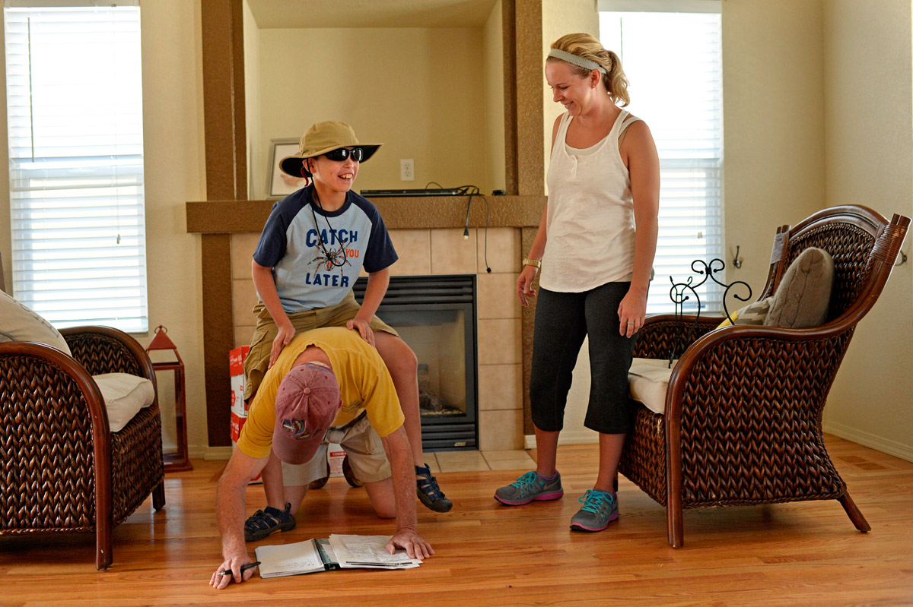July 4 “Paw Paw” Don Raynor, crossing off projects on his to- do list, is just another chance for Preston to get a horsey ride. With most of the moving and assembling done, Don will be leaving his daughter and grandson in the morning for the long ride back to North Carolina.
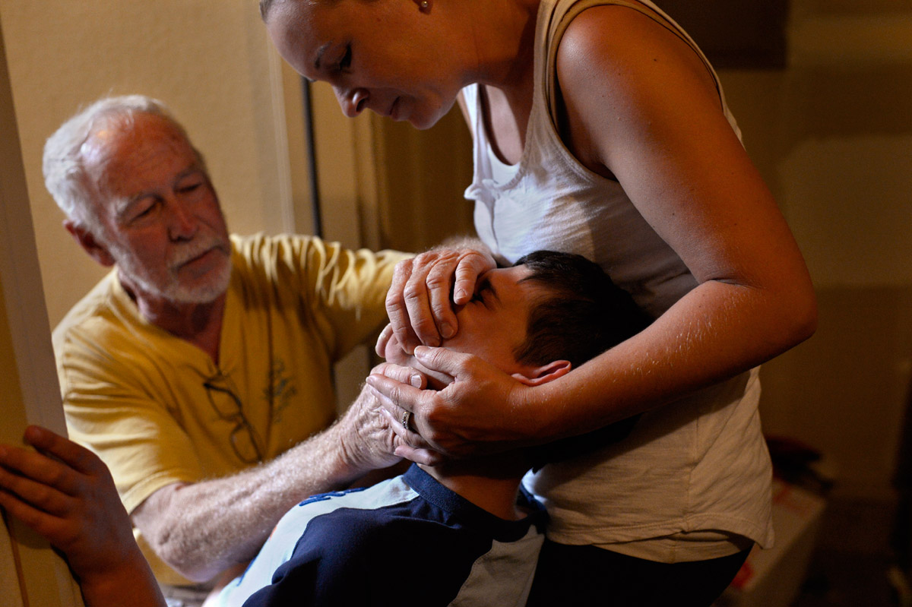July 4 “We’ll try something different,” Don Raynor says as he holds Preston’s mouth closed and massages his throat while Ana holds her son’s head to get Preston to swallow his medication. Preston has refused to take his meds without a fight for a solid week, and everyone is worried and exhausted by the efforts to get him to take them. This didn’t work either: He spit them all out.
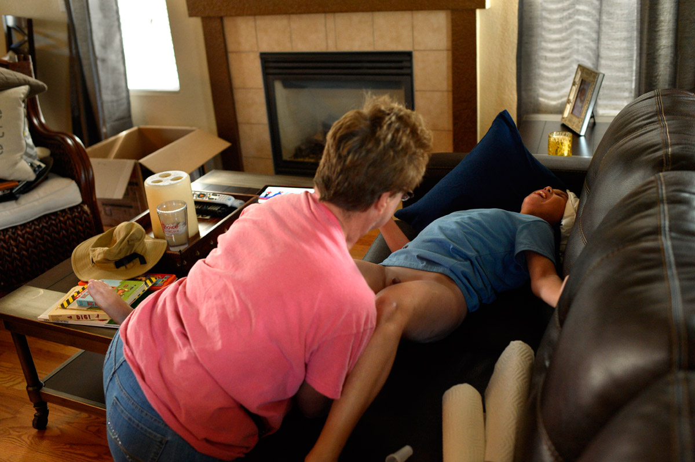July 5 Preston reacts to the pain as his grandmother Milly had to resort to Diastat, a rectal gel anti-convulsant, to try to break a cycle of myoclonic seizures that had lasted for hours.
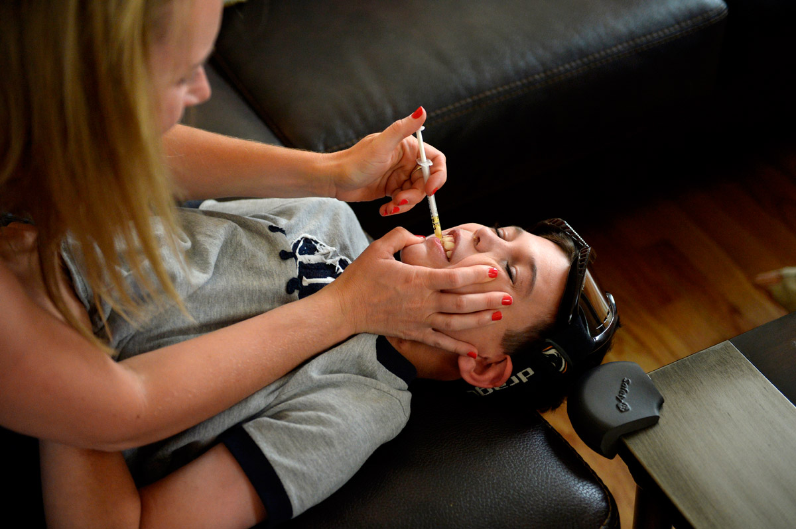September 3 Ana is trying a new way of giving Preston his oil. She is giving him straight THC by mouth separately from the CBD oil she gives him in his feeding tube. He hated it. She squirted it in and he started spitting and sputtering as soon as he tasted it. She ended up mixing it with formula and using his feeding tube. By using the oil separately she can figure his dosing ratios for tighter control.
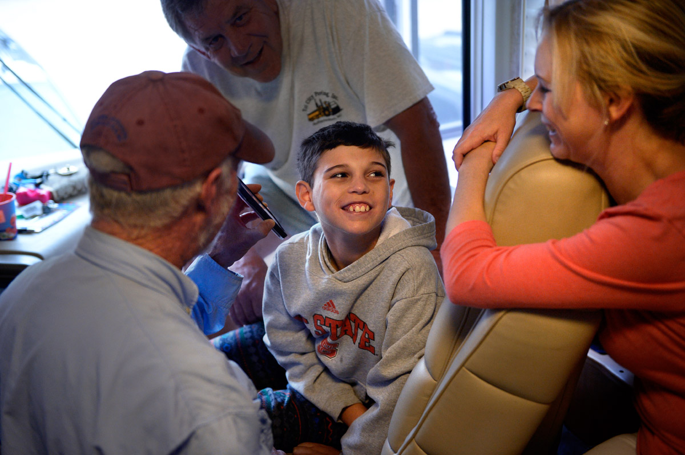July 2 Ana Watson and her 12-year-old son, Preston, tell her sister Jessica the good news over the phone: “We have a house.” The trip with her parents and their friend Forest for Preston to begin using cannabis oil — high in cannabidiol, or CBD, but low in THC to try to control his seizures — is nearly a reality.
July 3 Preston Raynor, 12, gives his mother a suspicious look as she tries to offer him ice cream with an M&M on top. He knows she is trying to give him his afternoon medications; after years of this working for their family, Preston has stopped falling for the ruse and fights it every time.
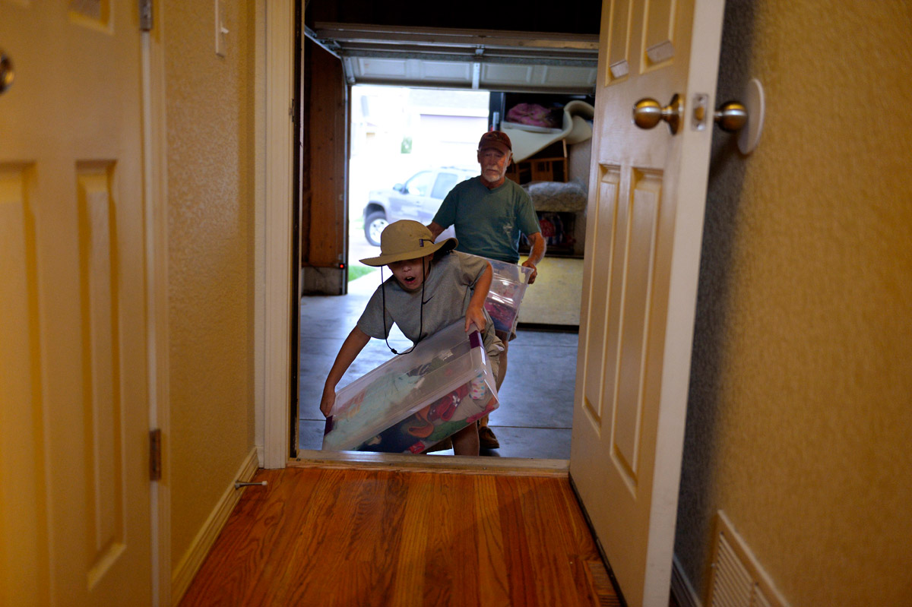July 3 Preston Raynor tries his hardest to get this box into the family’s new home. Finally, he is able to help unload the trailer, which has held his complete attention as it followed his family across the country on the trip to Colorado.
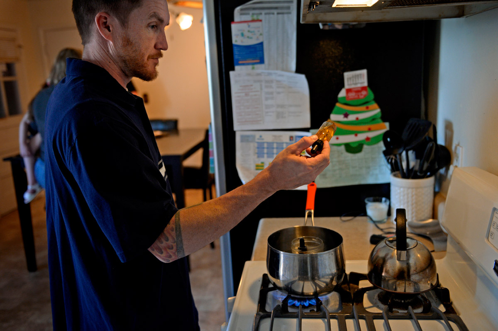August 5 Jason Cranford emulsifies a small amount of THC and cannabidiol to make a 10-to-1 ratio for Preston. They are trying to find the “sweet spot” of THC and CBD to control Preston’s seizures.
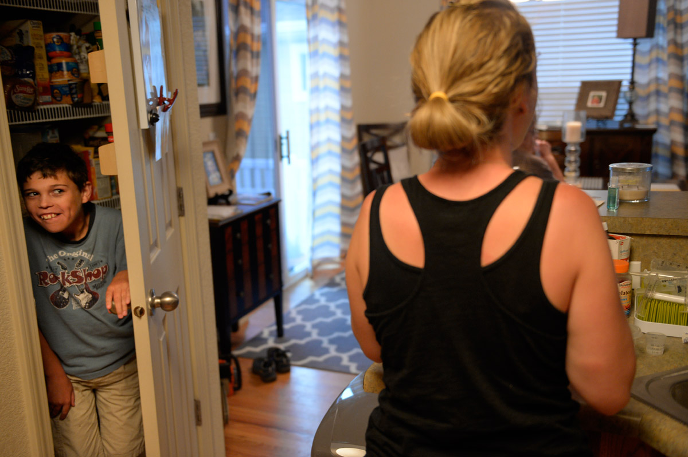August 5 Preston hides from his mom as she mixes his medications. He has started using THC with CBD and, aside from being playful with his mother, watched most of “Ghostbbusters II.”

November 5 Ana Watson and MGA Home Healthcare nurse Chelle Bennett carry Preston to a bean-bag chair. Preston has suffered continuous myoclonic clusters most of the day. He had a 30-second tonic-clonic seizure early in the afternoon. Preston’s new normal is to go straight back into myoclonic clusters after a seizure. Dravet syndrome children usually have a variety of seizure types, which can change for a number of reasons.
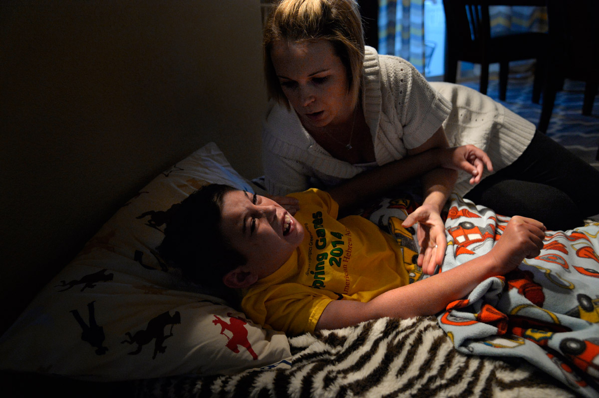November 5 Ana hovers anxiously over Preston as he jerks forward during the second tonic-clonic seizure of the afternoon. The tightening and straining of his body lasted for 90 seconds of small grunts and breaths, his right hand rolled in a shaking fist before the seizure ended with his blank stare as he relaxed into sleep.
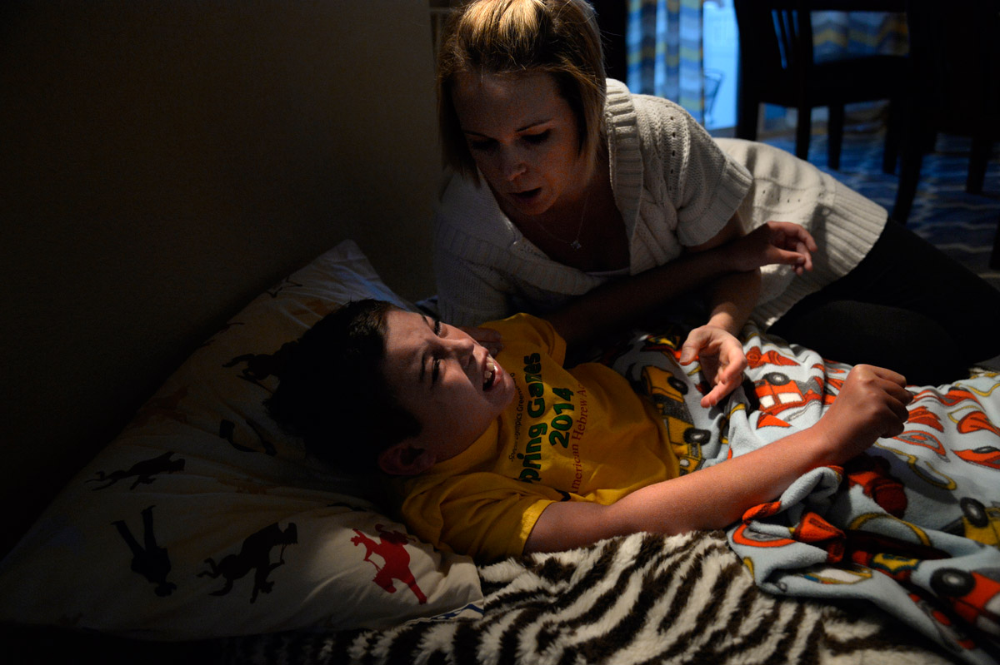November 5 Ana hovers anxiously over Preston as he jerks forward during the second tonic-clonic seizure of the afternoon. The tightening and straining of his body lasted for 90 seconds of small grunts and breaths, his right hand rolled in a shaking fist before the seizure ended with his blank stare as he relaxed into sleep.
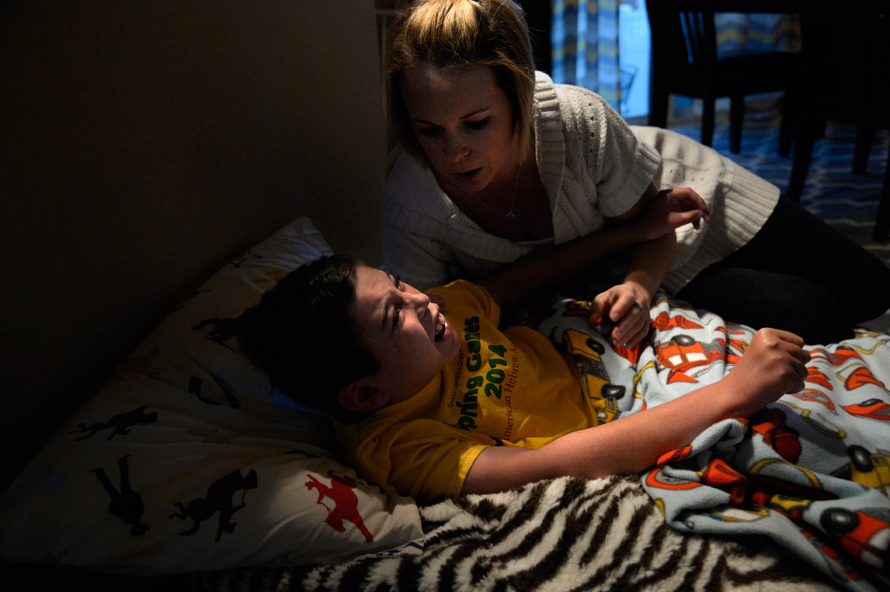November 5 Ana hovers anxiously over Preston as he jerks forward during the second tonic-clonic seizure of the afternoon. The tightening and straining of his body lasted for 90 seconds of small grunts and breaths, his right hand rolled in a shaking fist before the seizure ended with his blank stare as he relaxed into sleep.
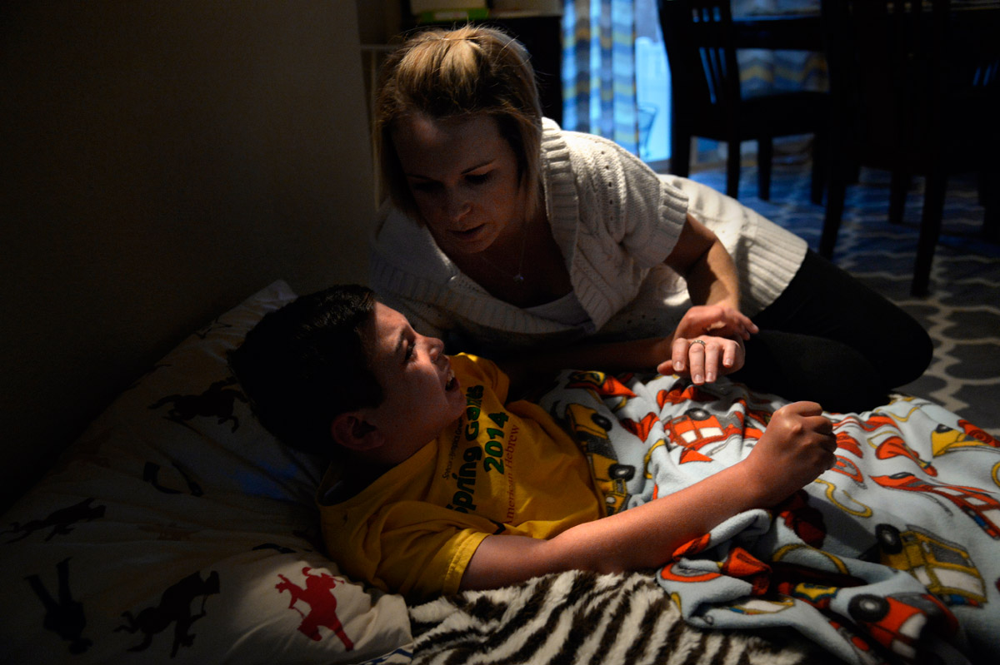November 5 Ana hovers anxiously over Preston as he jerks forward during the second tonic-clonic seizure of the afternoon. The tightening and straining of his body lasted for 90 seconds of small grunts and breaths, his right hand rolled in a shaking fist before the seizure ended with his blank stare as he relaxed into sleep.
May 7 Preston Raynor, 12, resists his mother’s gentle requests to get up as he curls up to his little sister, Sydney Watson, 8. Ana Watson’s mornings quite often start with both of them in her bed at her North Carolina home. They will soon be moving to Colorado in the hope that Preston, who suffers from Dravet syndrome, will be able to use a high CBD cannabis oil to control his seizures.
October 7 Working to improve his hand-eye coordination, Preston concentrates on popping bubbles with one finger during occupational therapy at home with Kate Vovato, a therapist from MGA Home Healthcare.
October 7 Preston and Haleigh dance while Tami watches in the background. The families met at Milly’s house for dinner in order to save money on food and to get together for something other than emergencies.

August 11 Preston walks to his classes with a very watchful nurse Chelle now that he has moved up to middle school. It didn’t take many days at school for Preston to be showing signs of overstimulation and an increase of myoclonic seizures in the afternoons. He still goes to extra classes but usually after the halls have cleared at Skyview Middle School in Colorado Springs.
May 8 The dregs of his afternoon seizure medications are still on his lips as 12-year-old Preston Raynor rests on his porch after a long day of school interrupted by numerous myoclonic seizures.
May 8 Ana Watson has to keep a tight rein on son Preston as they head off to school. “He is fearless,” she said. “He will walk straight off of the steps without looking down to see where he’s going.” Preston also acts totally on impulse “if he sees something he wants. Or if he gets a chance, he will run right after it — and he’s fast.”
May 8 Preston Raynor wheels his head around and around early in class at Kiser Middle School. If he is bored, playful or just not in sync with what is going on in class, he finds a way to let everyone know.
May 8 Preston Raynor wheels his head around and around early in class at Kiser Middle School. If he is bored, playful or just not in sync with what is going on in class, he finds a way to let everyone know.
July 9 Ana Watson finally is able to get high cannabidiol oil for Preston from caregiver Jason Cranford. The journey hasn’t been without frustration. She has had to fill many forms and file a change-of-patient record for the medical-marijuana registry. She now is overwhelmed with worries: how much to buy and when; how strong it will be; how much to give Preston; whether to add THC.

July 9 Preston Raynor, 12, his mother, Ana Watson, sister Sydney Watson and grower Jason Cranford take a first look at the plants, named “Haleigh’s Hope,” that will provide the oil for an attempt to control Preston’s seizures. “This is the plant that is going to help Preston,” Ana said.
July 9 Preston Raynor, 12, his mother, Ana Watson, sister Sydney Watson and grower Jason Cranford take a first look at the plants, named “Haleigh’s Hope,” that will provide the oil for an attempt to control Preston’s seizures. “This is the plant that is going to help Preston,” Ana said.
July 11 Sydney Watson, 8, tries to get older brother Preston to drink some sweet tea. Sydney was Preston’s little nurse when they were younger, always helping her mother care for him. Preston hasn’t been eating very well or taking medications without a fight lately, and Ana asked Sydney to help.
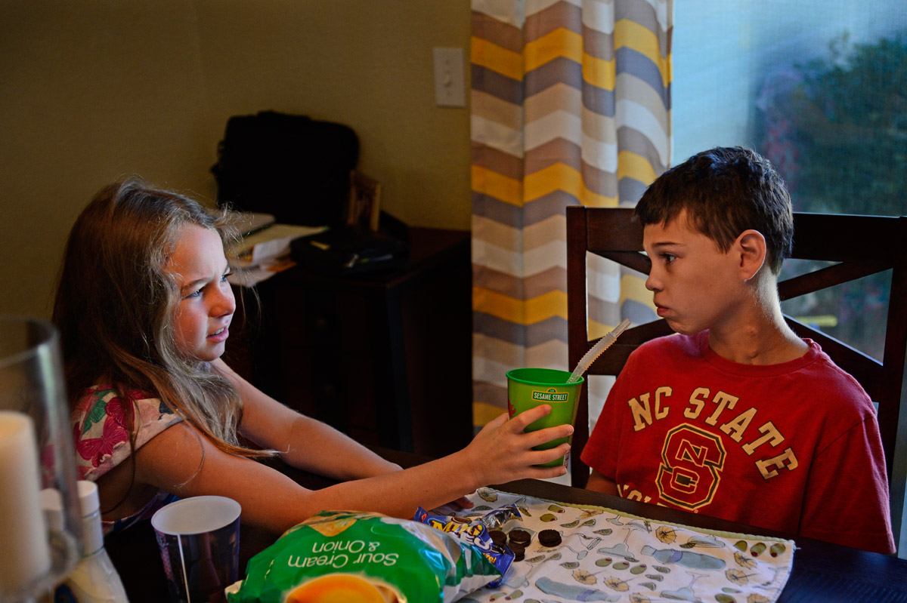July 11 Sydney Watson, 8, tries to get older brother Preston to drink some sweet tea. Sydney was Preston’s little nurse when they were younger, always helping her mother care for him. Preston hasn’t been eating very well or taking medications without a fight lately, and Ana asked Sydney to help.
July 12 Ana Watson measures 5mg per pound for Preston’s first dose of “Haleigh’s Hope,” a high-CBD oil she has been pinning her hopes on to help control his seizures and change his life.
July 12 Ana Watson measures 5mg per pound for Preston’s first dose of “Haleigh’s Hope,” a high-CBD oil she has been pinning her hopes on to help control his seizures and change his life.
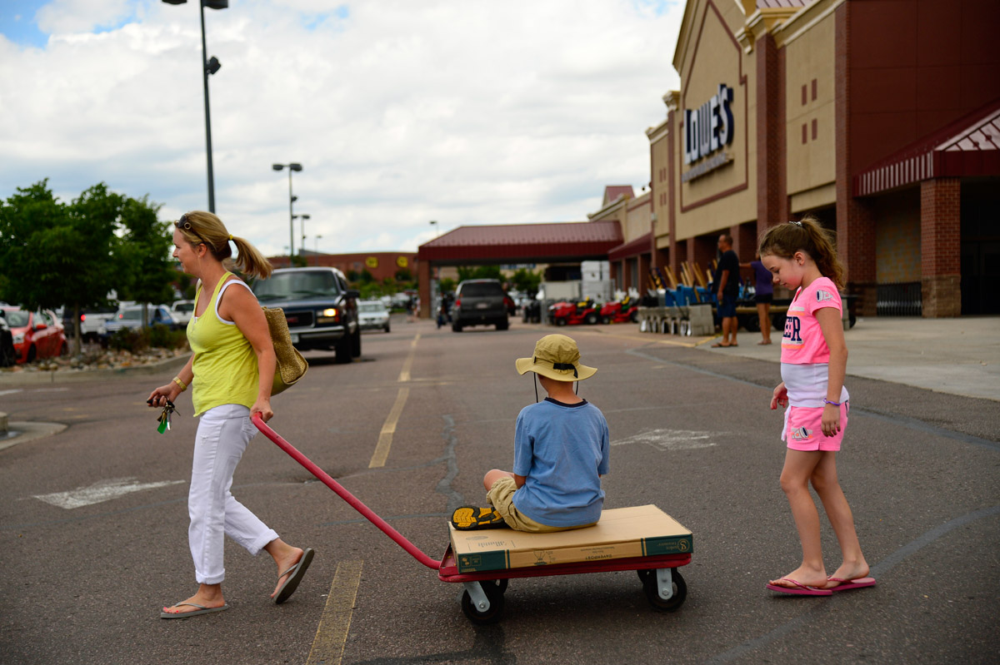July 13 Preston enjoys a ride during a visit to Lowe’s with his mom and sister Sydney to buy an outdoor table for the kids to use in their backyard. Ana has been trying to get settled Colorado Springs, start Preston on his oil, visit new doctors and make appointments. A visit to the local hardware store may well be one of the most normal things she has done since their move to Colorado.
July 10 Ana Watson working up to starting Preston on the High CBD Oil to try and control his seizures. Also on the 11th the family takes a trip to Cripple Creek Colorado to ride the 2 foot rail trains... Preston loves trains.
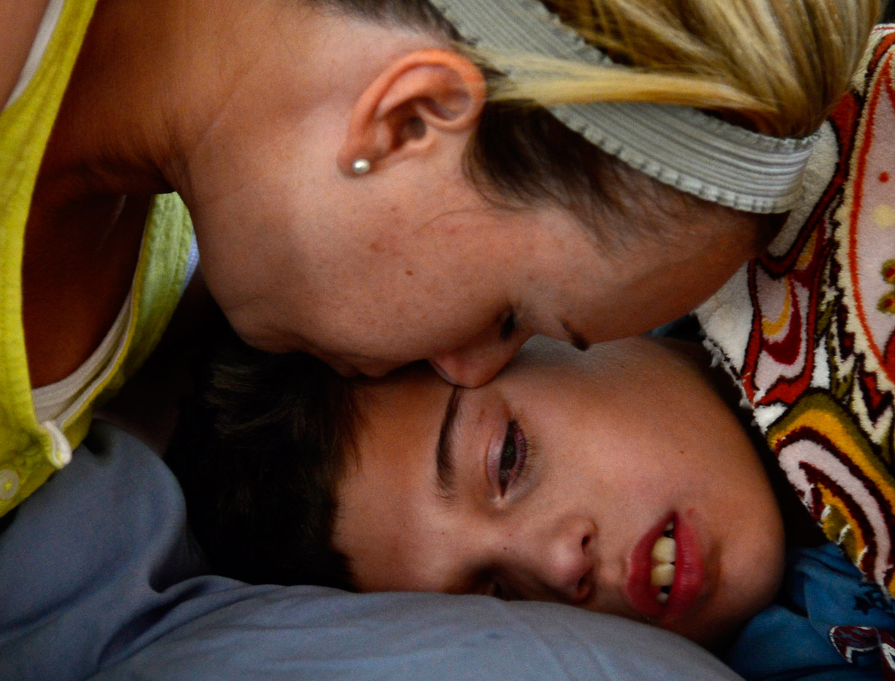July 13 Minutes after a grand mal seizure and Preston safe and covered on the couch, Ana whispers to Preston, “It’s all right, Peppy. I love you. It’s alright now,” over and over. The seizures can come out of nowhere. But most seem to come after hours of myoclonic clusters, when Ana wishes a grand mal would come to end them, but when they do come, each one is a threat and a second’s thought that it may never end.
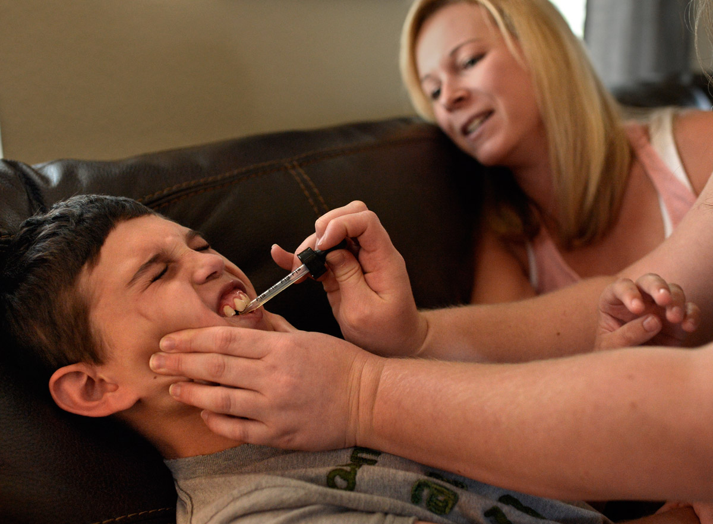July 12 Ana Watson watches as Preston gets his first dose of cannabidiol oil from Stephanie James, a nurse visiting from North Carolina. The dose goes in, but he spits it right back out. When this doesn’t go well, they mix the medication with food, but Ana worries how it will be absorbed into his body and if it will change the way it is supposed to work in Preston’s body.
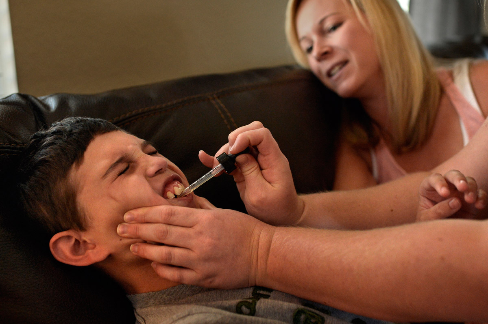July 12 Ana Watson watches as Preston gets his first dose of cannabidiol oil from Stephanie James, a nurse visiting from North Carolina. The dose goes in, but he spits it right back out. When this doesn’t go well, they mix the medication with food, but Ana worries how it will be absorbed into his body and if it will change the way it is supposed to work in Preston’s body.
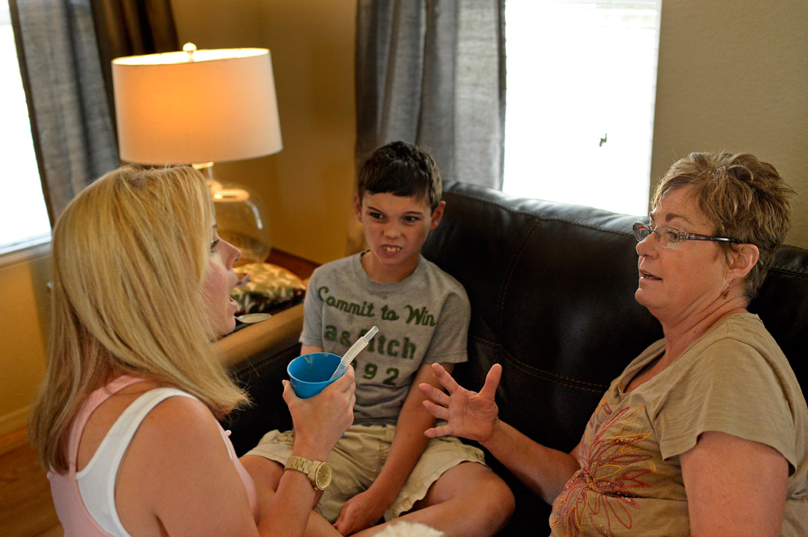July 12 Preston watches as Ana and her mother, Milly, argue over how to administer the cannabidiol oil after Preston spit out their first attempt at giving it to him orally. Milly will not let the argument end, and in the tension of the moment Ana asks, “Why did we even come down here? He needs to take it.”
July 13 Ana and Milly work to get Preston into the house after a grand mal seizure during a hot day in the backyard.
July 13 Tami King and Ana Watson recheck dosing measurements for the cannabidiol oil for Preston’s medication on the high CBD oil to try and control his seizures.
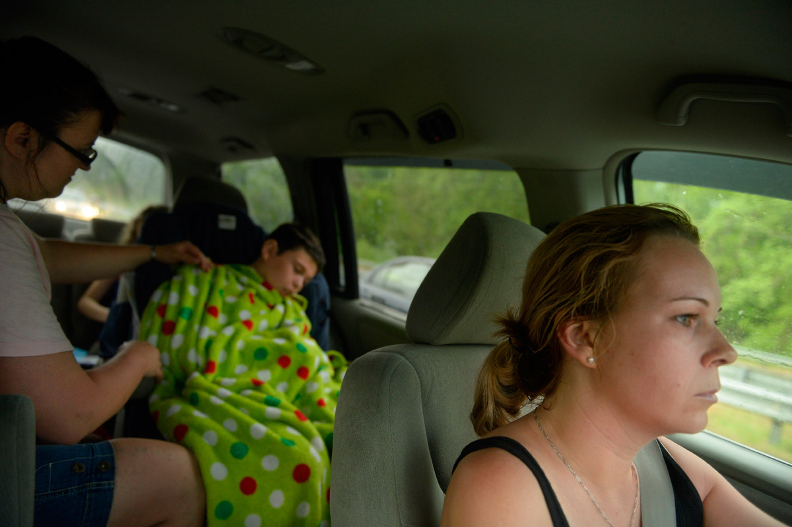May 9 Preston’s at-home nurse Sheila Wall keeps watch after a sudden cloudburst while picking strawberries. Excitement and the quick drop in temperature brought on almost nonstop myoclonic seizures that Preston’s mother, Ana, fears may turn into a full tonic-clonic, or grand mal, seizure before they get home.
May 11 Ana Watson struggles for a good hold on her sleeping son after a family visit with her parents for Mother’s Day. Although Preston’s mental development was halted at the toddler stage, he is not much shorter than she and weighs nearly 70 pounds. Ana’s strength and determination drive her across the yard and into the house to get her boy to bed.
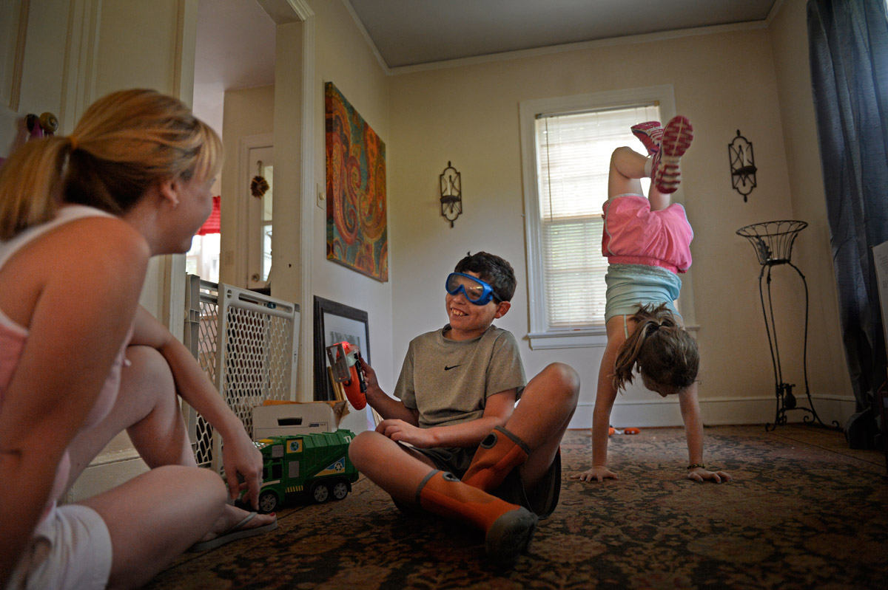May 11 As the furniture slowly empties from the house, Preston, complete with safety goggles and boots, plays carpenter in the dining room while whirling dervish little sister Sydney practices handstands and walkovers in the new space.
May 11 To make sure Preston doesn’t bolt Ana, is tight beside her son, who wears his cool-down vest. The vest keeps his core temperature even. Here, he fishes and teases Lexi with a bluegill they just caught on Mother’s Day. It is a beautiful day for their last visit to one of Preston’s favorite places in North Carolina — the “lodge” at the Piedmont Quail Club, which his grandfather manages.
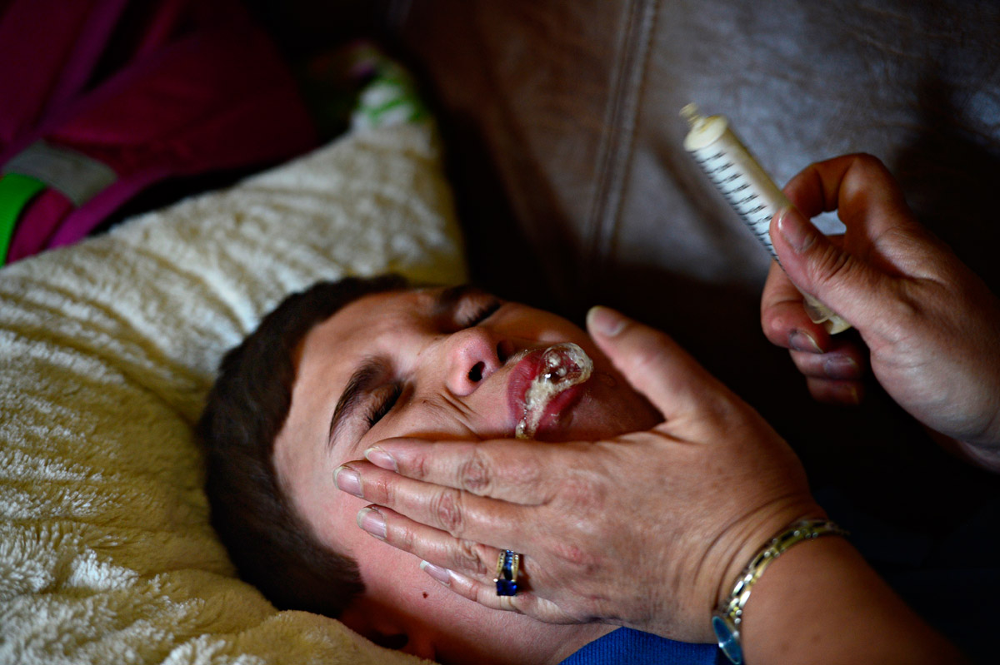May 12 Preston spits out his seizure medications, which were mixed with sweet tea. He took the first few squirts easily, but as more of the undissolved pills filled the syringe, the taste and texture became much worse. Preston’s meds have been masked in everything imaginable — sweets, ice cream, whipped cream, ranch dressing — which he eats on almost everything. But all attempts are less and less effective.
May 12 Preston pulls back toward the lunchroom with Regina Lane, his in-school nurse, as he hears a friend in the hallway. Regina has been with Preston for five years. She knows that if something catches his attention, he will head in that direction, as well as how to how persuade him to focus on what he might be doing.
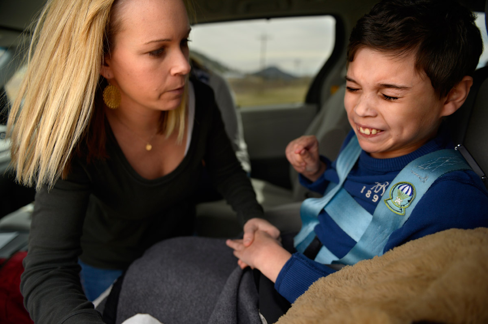April 15 Ana Watson keeps a sharp eye as her 12-year-old son, Preston, goes into a grand mal seizure on the frontage road near Mile Marker 174 on Interstate 25 on their way from Colorado Springs to see Jason Cranford at his Rifle Mountain Dispensary grow in Boulder. Ana is visiting from North Carolina to change her residency and apply for her medical marijuana Red Card to use high Cannabidiol cannabis oil to try to control his seizures.
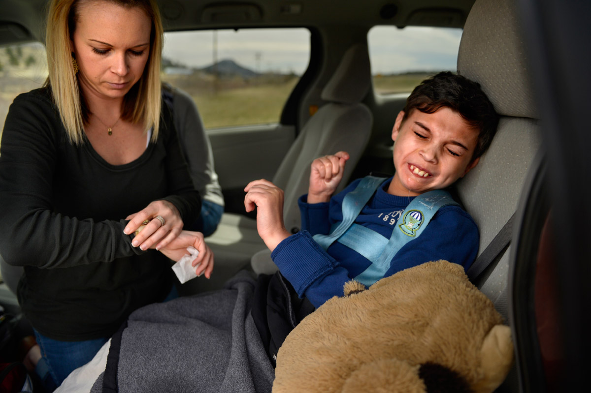April 15 Ana Watson marks the time as son Preston, 12, goes into a grand mal seizure on the frontage road near Mile Marker 174 on Interstate 25 on their way from Colorado springs to see Jason Cranford at his Rifle Mountain Dispensary grow in Boulder. Ana is visiting from North Carolina to change her residency and apply for her medical marijuana Red Card to use high CBD cannabis oil to try to control his seizures.

April 15 Ana Watson meets with Jason Cranford at his Rifle Mountain Dispensary grow in Boulder. Ana is visiting from North Carolina to change her residency and apply for her medical marijuana Red Card to use the high-CBD cannabis oil to try to control the seizures her son, Preston, is affected by because of Dravet syndrome.
July 16 “Oma,” Preston’s grandmother Milly Raynor, watches as nurses prepare him for surgery at Children’s Hospital in Aurora, Colo. For weeks he has not been eating well or getting his full amount of seizure medications. Preston went in for an appointment to meet his neurologist that turned into an operation for a gastrostomy tube and a 24-hour EEG. His mother, Ana Watson, had to stop giving him the CBD oil so they could get a good baseline EEG.
July 16 Recovery room nurse Breanne Hagihara explains to Ana Watson that she will have to use extra care for the next six weeks as son Preston’s incision for his gastrostomy tube heals and the permanent button can be put in at Children’s Hospital in Aurora.
July 17 Ana Watson takes a picture of Preston to share with family, friends and on his Facebook page, Hope for Preston, after he is wired and wrapped for his 24-hour EEG at Children’s Hospital in Aurora. The EEG will give doctors a baseline to compare against during his treatment.
July 17 A nurse stops in for a quick check on Preston’s incisions and tube during his EEG while he is snuggling with his mother, Ana Watson, at Children’s Hospital in Aurora.
September 15 Ana Watson gives Preston Raynor his cannabidiol oil in the recovery room after getting his permanent feeding button in place at Children’s Hospital in Aurora.
October 16 Preston Raynor, 12, rides and controls a scooter for the first time by himself in the open space in front of his home.
October 16 Preston Raynor, 12, rides and controls a scooter for the first time by himself in the open space in front of his home.
September 16 Ana, Preston and a group of Dravet moms with their kids showed up at the State Capitol in Support of Jason Cranford and Haleigh’s Hope a high CBD oil.
September 16 Dravet syndrome moms Mallory Johnson and Ana Watson, with their kids Zoey and Preston, walk to the state Capitol in support of caregiver Jason Cranford and “Haleigh’s Hope” — a high-cannabidiol oil they use to try to control their children’s seizures — during a hearing of the Colorado Board of Health.
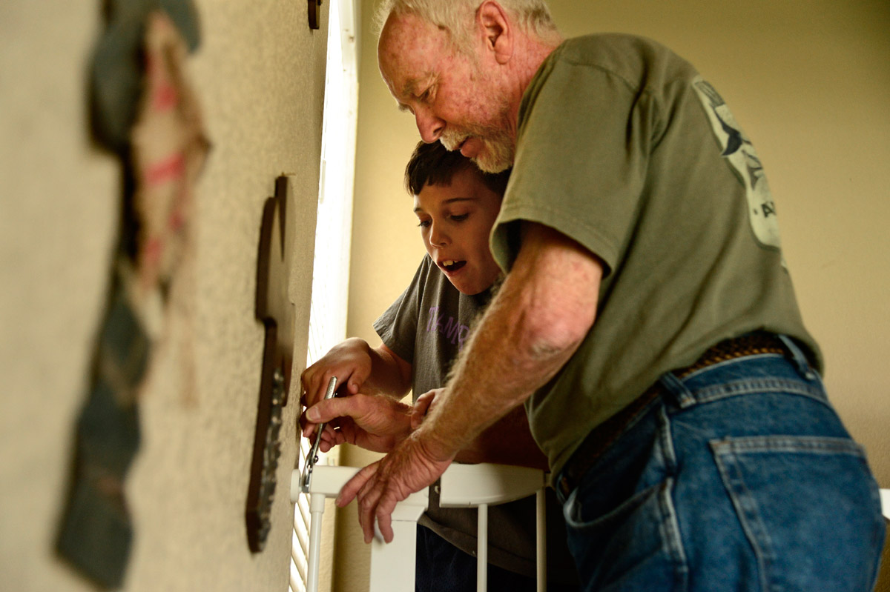September 17 Preston helps “Paw Paw” Don Raynor tighten gates on the stairs during his grandfather’s visit from North Carolina to bring wife Milly her car. Milly has moved into her own apartment to relieve some of the tension that can arise between her and Ana. She plans to live in Colorado as long as her daughter and the children are here.
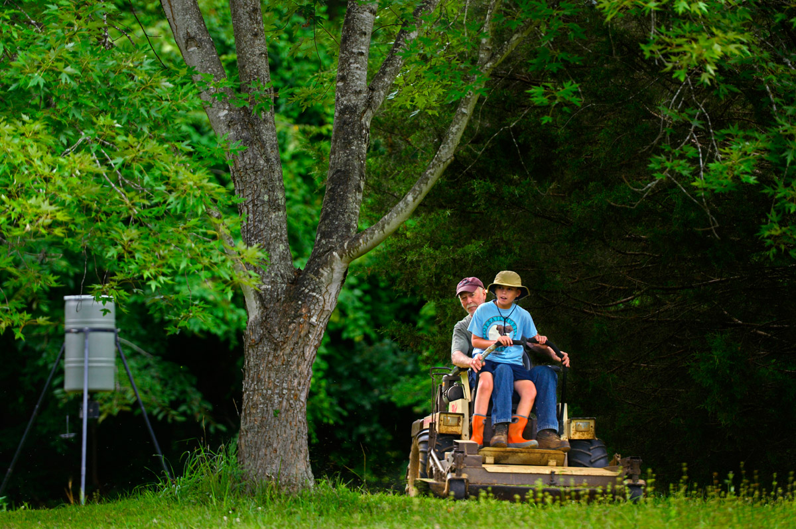June 18 A day at the beach with Ana Watson, her 12 year old son Preston Raynor in North Carolina then home to Greensboro for a few days before they change residency and move to Colorado for Preston to use the cannabis oil high in CBD and very low in THC to try and control his seizures.
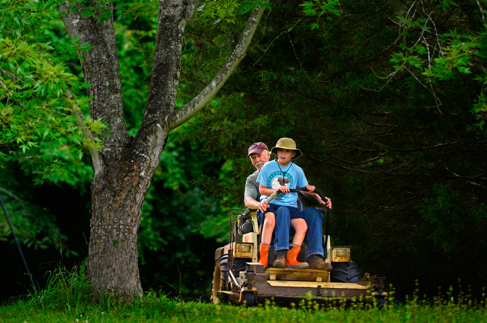June 22 12-year-old Preston Raynor is in all his glory with his grandfather, “Paw Paw” Don Raynor, for his last ride on the Grasshopper in North Carolina before the move to Colorado. Preston’s family wants to try high-cannabidiol oil to control his seizures.
August 20 Ana Watson has decided to try adding THC to Preston’s CBD oil, which will change the ratio of doses she gives him.
August 20 Ana Watson gets a firsthand view of the trimming and drying process that goes into making the cannabidiol oil she is using to treat her son Preston Raynor, 12.
August 22 Preston throws out the first pitch at a Sky Sox game in Colorado Springs with his aunt Jessica Raynor, mother Ana Watson, grandmother Milly Raynor and sister Sydney Watson. Once the game started, he was mesmerized by the players as he stood and yelled “Go!”
July 23 An absent seizure looks and feels just like it sounds: Preston stopped interacting, staring into nothing, drool leaking from his mouth, his hands unmoving. It was a startling change from the blinking and jaw-working during his “normal” myoclonic clusters. Dravet syndrome children experience many types of seizures. The seizures can change, and some children will have a combination of seizure types, all during one episode.
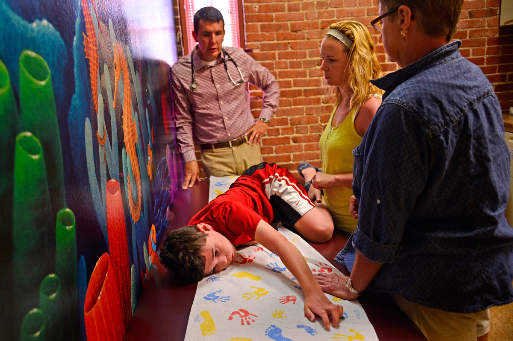July 23 Physicians assistant Tom Dishion talks to Ana Watson and Milly Raynor at Iron Horse Pediatrics in Colorado Springs. Preston has been running a fever for three days, today at a steady 101.9. He has been complaining about his feeding button: “Out, out,” he says. They went from the clinic to an X-ray at Memorial Hospital to check the feeding tube placement.
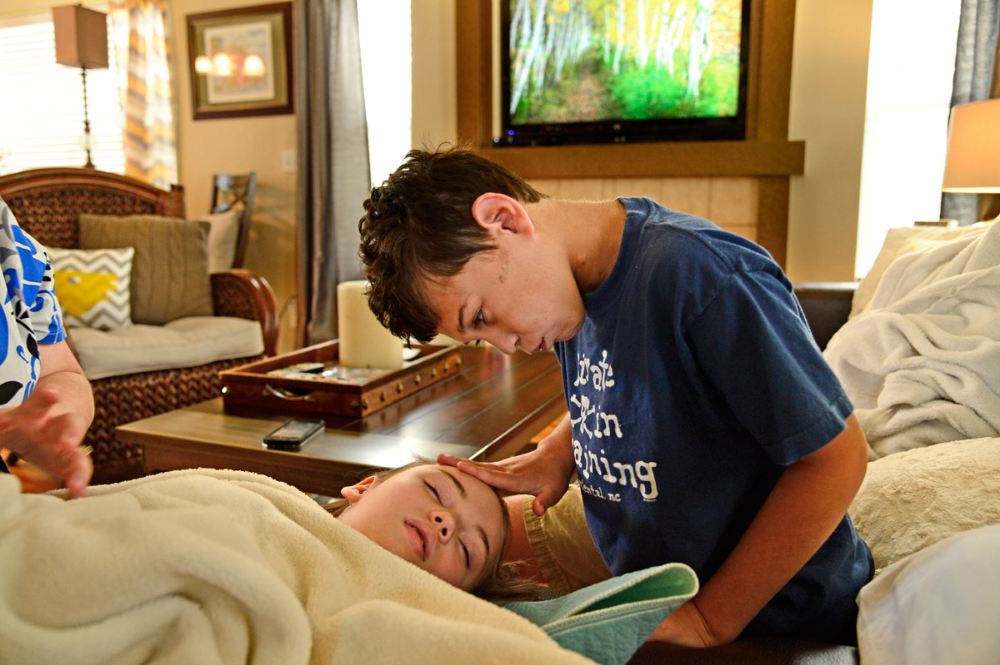July 24 Preston gently touches his friend Hailey McGuire as she rests at his home. Hailey, Tami King’s daughter, also has Dravet syndrome. King had stopped at Watson’s home for the comfort of a friend after a doctors visit at which Hailey had her seventh grand mal seizure since 2 a.m. and is “still in seizure mode” as Tami calls it. There is a connection between Dravet mothers, but there also seems to be a deep understanding between Dravet kids.
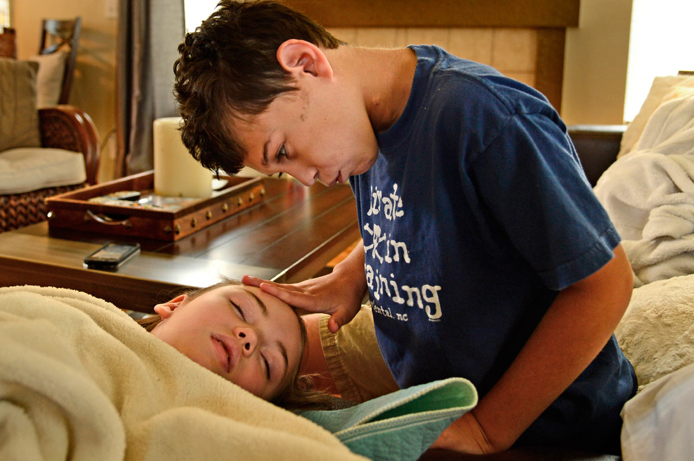July 24 Preston gently touches his friend Hailey McGuire as she rests at his home. Hailey, Tami King’s daughter, also has Dravet syndrome. King had stopped at Watson’s home for the comfort of a friend after a doctors visit at which Hailey had her seventh grand mal seizure since 2 a.m. and is “still in seizure mode” as Tami calls it. There is a connection between Dravet mothers, but there also seems to be a deep understanding between Dravet kids.
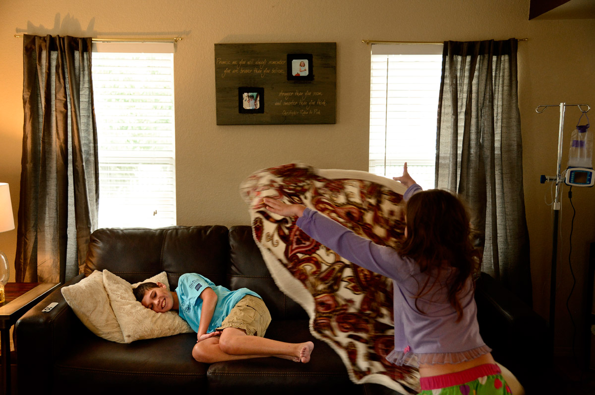July 25 Preston isn’t feeling well and took to the couch, but sister Sydney decided he needed a little cheering up by playing swoosh with his blanket.
July 29 Preston meets Dr. Alan Shackelford at his office in Denver. He and his mother, Ana, are visiting the doctor for help with Preston’s dosing. Shackelford evaluated Preston’s physical condition, then went over his medical history with Ana and her mother to figure out a starting point to use the cannabidiol oil.
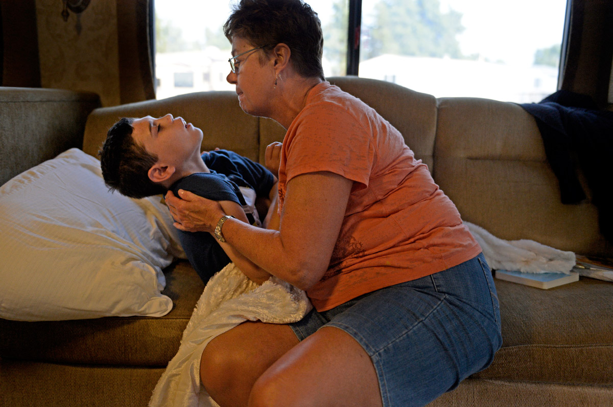June 26 Milly Raynor, Preston’s grandmother, tries to make him more comfortable in the RV they are using to travel across the country as she sings him to sleep at the RV park in Valley Center; Kan. Preston had a rough day with cluster seizures and over stimulation during the trip and now is fighting his medication to help him sleep.
October 26 Preston Raynor has been eyeing his sister’s bike for a long time, taking every chance to sit on it when he could. On his 13th birthday, he finally has one of his own, with big training wheels.
October 26 Preston’s 13th birthday party. Lost of dravett kids and families. Preston was blink and was given versed before people showed up. he was reacting pretty slow during the party.
October 26 Preston Raynor has been eyeing his sister’s bike for a long time, taking every chance to sit on it when he could. On his 13th birthday, he finally has one of his own, with big training wheels.
June 27 Ana Watson and son Preston, 12, stopped to take a picture after entering what they hope will be a breakthrough in their quest for seizure control in Preston’s battle with Dravet syndrome. Ana is moving her family to Colorado from North Carolina for Preston to use cannabis oil high in cannabidiol, or CBD, and low in THC.
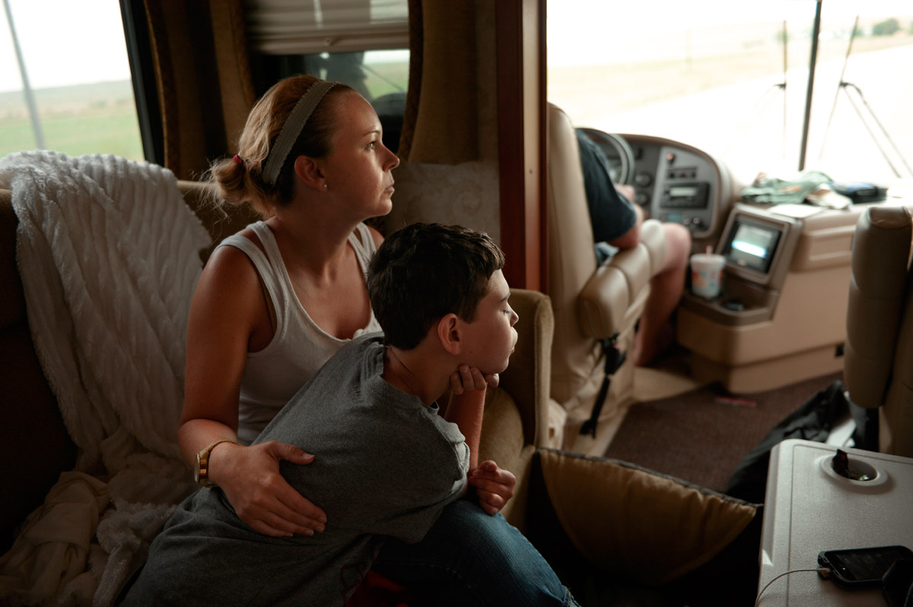June 27 Ana Watson holds 12-year-old son Preston. He wants to look out the big window and see the miles go by in their new state but is being hit by clusters of myoclonic seizures.
August 26 Stephanie Slusser, a significant-support teacher and Preston’s classroom teacher, helps him write the names of all his classmates at Skyview Middle School in Colorado Springs.
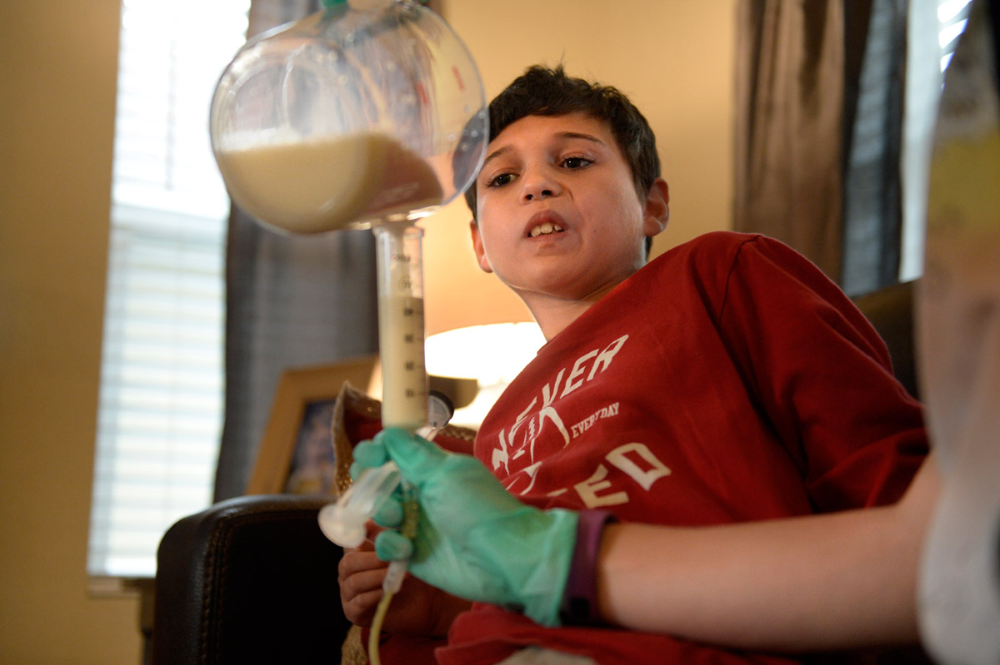August 26 Preston’s body is accepting the feedings from his G-tube. He can now take gravity feeds, which are much quicker than being hooked up to a machine that takes about an hour to deliver the solution.
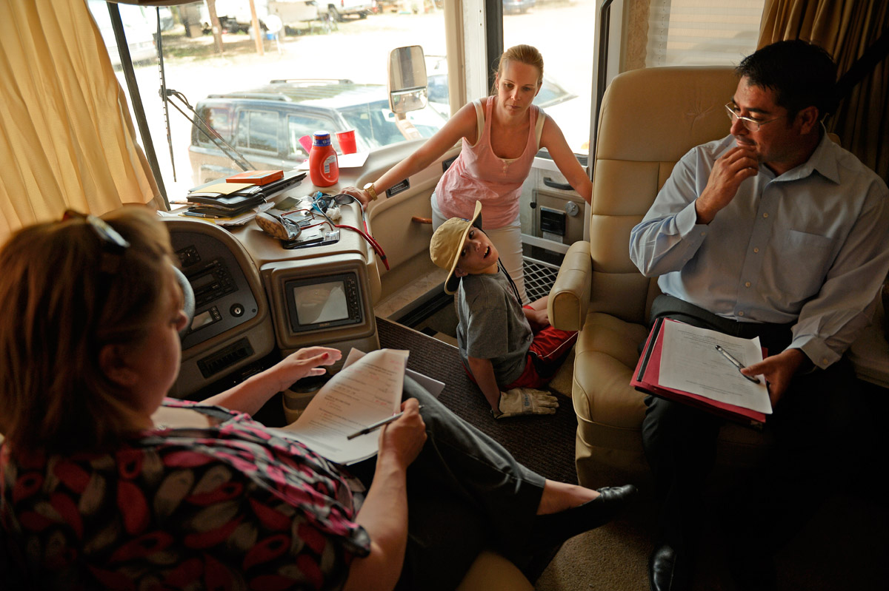June 30 Ana Watson blocks the door to keep Preston inside during an interview to evaluate the type and amount of care he will need in Colorado. Jennifer White, a clinical supervising nurse with the Certified Nursing Assistant division, and Mike Quintana, account manager with MGA Home Healthcare, base their assessment on state guidelines to provide for Preston’s medical needs.
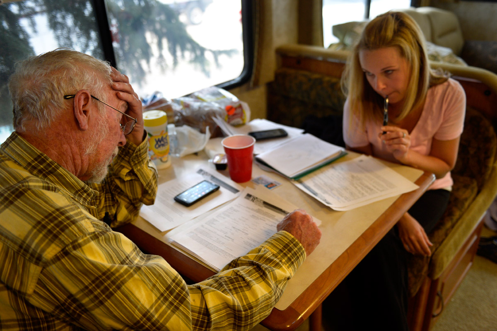July 1 Don Raynor and daughter Ana Watson go over the real estate application for a house Ana wants to rent in Colorado Springs. Don reads everything very carefully: He is worried about Ana being so far from home and whether her income will cover everything she and the kids will need.
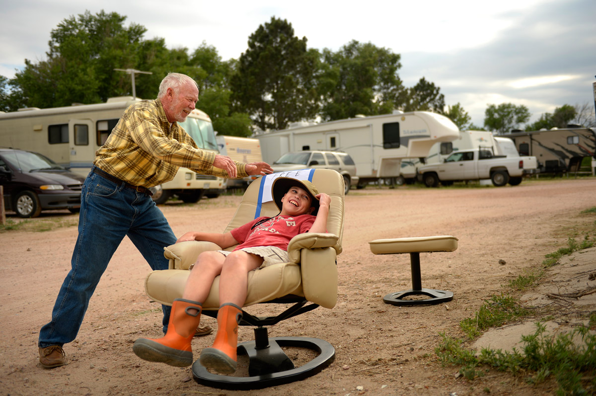July 1 Things are looking up at the RV park. Ana has found a house she wants to rent, and Preston found a computer chair he likes set out for free near the trash bin. Preston kept “Paw Paw” spinning him until he could spin no more.
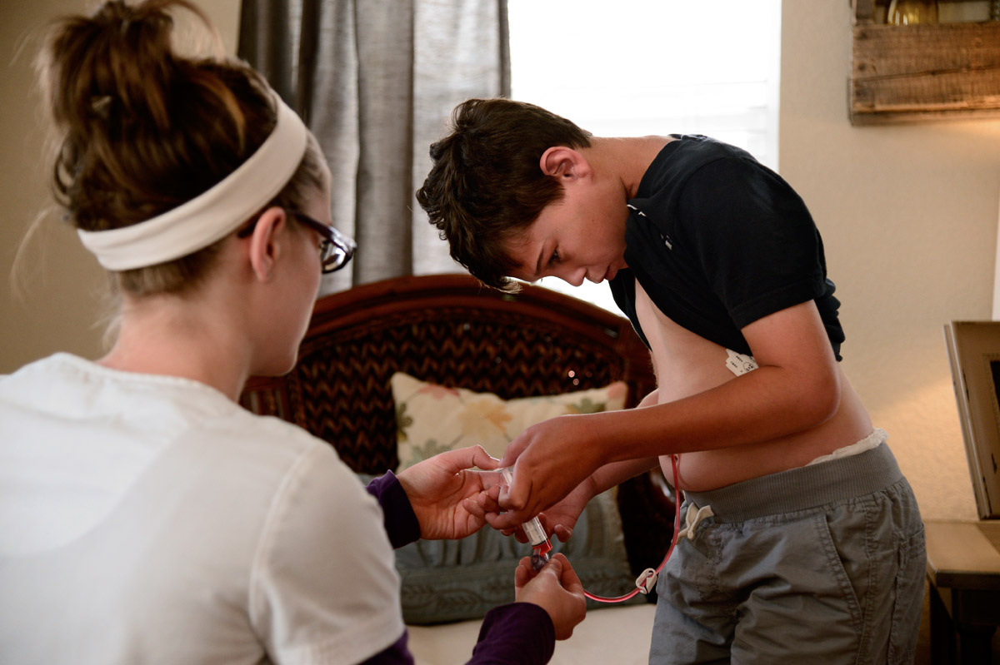September 30 Preston Raynor has become so used to his G-tube that he helps push one of his medications, Depakote, that is used to treat seizures.
July 31 Ana Watson talks with Stephanie Slusser, a significant-support teacher who will be Preston’s classroom instructor. Slusser was meeting with Preston and his mother during an Individualized Education Program meeting at Skyview Middle School in Colorado Springs. Everyone who would interact with Preston was there. Issues they covered included pickup times, oxygen placement, CBD oil, what would happen if he had to have the anti-convulsant Diastat, as well as who could give him meds and where that would happen. They tried to discuss anything that could happen at the school.

Dee Fleming is comforted by her daughter Amy while talking about her son. Diagnosed with schizoaffective disorder, Dee’s son ingested prescription medications and cleaning supplies then soaked himself with gasoline and lit himself on fire. When his burns no longer required hospitalization the doctors said he was free to go and he did not need in-patient psychiatric treatment. “He doesn’t think that he would ever have done this had he not been driven by forces in his mind,” Dee says.

This is George Brady’s second time in the two-year mental health court program. “I gotta persevere with it and just stick through,” he says.

Chazz Worrell, 10, helps his brother, Cody Woodall, build a fence on Cody’s ranch in Fort Collins. Chazz was diagnosed with post traumatic stress disorder and attention deficit hyperactivity disorder. He also has anxiety and anger issues. Their mother, Liz Worrell, says that Cody understands his younger brother. “Cody has had a rough road and been down some of the same paths.”
The federal Affordable Care Act created “parity” for mental health care, requiring insurance companies to provide their customers the same coverage for mental health treatment as they do for other care. But the law does not affect negotiations between hospitals and insurance companies, said Ben Price, executive director of the Colorado Association of Health Plans.
Hospital officials say that despite the law, they recoup less from private insurance companies for mental care than physical care. Denver Health, for example, is reimbursed for 32 percent of mental health billing compared with 41 percent for other medical care, according to the hospital’s financial office. Other hospitals refused to disclose that data. Experts say it’s too early to measure how the new health care law is increasing treatment for mental health patients. Community mental health clinics, however, are seeing an influx of new Medicaid patients.
“It’s pretty remarkable that insurance companies treat psychiatric care different than they treat all other care,” Zane said. “For some reason, brain failure is different than heart failure. That is one of the intrinsic prejudices against psychiatric insurance, and it’s pervasive.”
Insurance company executives said while it’s true that psychiatric care generally is reimbursed at a lower rate than surgical care, rates negotiated between hospitals and insurance companies vary widely across medical specialities.
“I do understand that we do have a psychiatric problem in this state,” said Neil Waldron, chief marketing officer for Rocky Mountain Health Plans. “But how we negotiate with the hospitals is a mutually agreed upon thing.”
Denver Health Medical Center is one of the few hospitals that has psychiatric emergency services, a secure, nine-bed section separate from the main emergency department. The unit sees 3,800 patients each year, of which about 900 are admitted. Most come for evaluation after police or ER doctors have placed them on mental health holds.
Some patients are able to leave within hours, after family meetings and help dealing with their immediate stress. Others are sent to the 36-bed, long-term psychiatric unit, where the average stay is about seven days.
Kim Nordstrom, the medical director of psychiatric emergency services, also has a law degree. Her professional degrees are at odds when she encounters a homeless person with mental illness who chooses to eat from the trash and sleep in the cold, yet has no signs of dehydration or malnutrition.
“I would not want to live that way and we don’t like to see other people live that way, but they have a right to,” Nordstrom said. She can, however, hold a patient if the person’s psychosis is interfering with the ability to make a plan to find food and shelter.
The Medical Center of Aurora—which opened a 40-bed psychiatric unit in 2012, the first one to open in the metro area in 10 years—gets patients from as far as Pueblo and Wyoming. The unit is almost always filled to capacity, which it caps at 32 because there are not enough psychiatrists to staff a unit of 40 people.
Nationally, psychiatrists are scarce, their numbers dwindling further as the profession becomes less lucrative than other specialities. In some rural parts of Colorado, there are none.
For the past 10 years, Denver psychiatrist Randy Buzan’s voice mail has said he is not accepting new patients. He already has 400. “I’m buried. I just don’t have time for all these people,” he said.
Like many psychiatrists, Buzan does not take insurance and instead charges patients on a sliding scale because that’s easier and more profitable than dealing with insurance companies. Buzan said he and some other psychiatrists avoid taking suicidal or homicidal patients because of the risks of a lawsuit if patients end up committing murder or killing themselves.
The Medical Center of Aurora built its psychiatric unit as a “community service” because emergency rooms at all HealthONE hospitals in Colorado were warehousing patients in mental health crisis. Patients are not getting treatment before they reach crisis, and often not after leaving hospitals either, said Teresa Mayer, medical director of the psychiatric unit.
“We don’t have anywhere to send them. Imagine if you had appendicitis and there was nowhere to go for follow-up,” she said. “It’s terrible. What could have been prevented is not preventable when there is no one to care for them.”

Timothy sits in his room at a Mental Health Center of Denver residential group home in Aurora. He says he is not taking any medication and he is frustrated with his new psychiatrist, “We agreed to disagree. She threatened to talk to the judge and have me put in jail if I don’t take what she prescribed.”

A security guard watches as Timothy talks with a former coworker outside King Soopers in Denver. Timothy suspects he is being watched because he had recently been fired from the store for giving a coworker a box of bullets in the store’s secret Santa exchange. He thinks the gift was appropriate because she was ‘outdoorsy’. He’s angry about losing the job.

Public defender Alice Norman smiles as Timothy expresses his appreciation to Judge Johnny Barajas after being accepted into the Court to Community program at the Lindsey-Flanigan Courthouse in Denver. Timothy was charged with assault for spitting in the face of an RTD security officer. He pleaded guilty to a lesser charge of disturbing the peace. He says of the night of his arrest, “I was drunk out of my brain. I was obstructing the light-rail.”

After filling out an application, Timothy waits to speak with manager Bruce Garett at Racines Restaurant. He is eager to find a job of any kind, but really wants a career.

Timothy talks with his grandmother, Fern, after attending the Court to Community program in May. During the court session for people with mental illness, Timothy was told he had less than 24 hours to report to a rehab facility. Fern expressed her appreciation to Judge Johnny Barajas, “This is the best thing that’s ever happened to him. He’s been suicidal for so long. I’m so grateful to you. I thank God for you,” she said. “You won’t be sorry. He’s the best person.”

Timothy looks at a childhood photograph of him and Fern while cleaning out his apartment. Fern says Timothy was diagnosed with attention deficit disorder as a child. “When Tim was a little boy, I remember that he was always on the go,” she says. “He was rowdy and ran around a lot, and he just couldn’t seem to focus on anything.”

Timothy sits on his sofa after removing it from his apartment in Capitol Hill before reporting to a rehabilitation facility. “This could develop into something very good. If I can maintain sobriety or maintain a common ground to incorporate myself into society. That’s my hope,” he says.

Timothy brushes his teeth outside the Martin Luther King Jr. Library in Aurora. Timothy lost his spot at the group home for people with mental illness and substance abuse earlier in the day. He says it was because he questioned the treatment he was receiving. The police are called and Timothy leaves with his belongings.

Sheriff’s Deputy Sonya Leyba takes Timothy into custody at the courthouse in July. Judge Barajas sanctioned Timothy to a night in jail after hearing that he had been kicked out of his group home and had been noncompliant the entire week. As the deputy prepares to handcuff Timothy, the judge says, “The thing I want you to think about this evening is that you can talk the talk, but I haven’t seen you do the walk. So just think about that and I’ll see you tomorrow morning.”

Timothy says goodbye to program administrator Shari Lewinski after being released from the Court to Community program in July. Timothy tells Judge Barajas he appreciated the program, “Despite not meeting up to their standards, I’ve learned a lot. I’m still off the drugs, I’m really grateful for that.” Timothy had volunteered for the program originally and Barajas honors his request to terminate.

Timothy talks with Fern at a Starbucks close to his campsite in Lakewood. Fern gives Timothy a bag of fruit and a gift card for groceries. She says, “I just want so much for you to have a plan.” Timothy replies, “I need your trust, please trust me.” He says he is going to continue living in the woods while looking for work.

Timothy washes a pair of jeans in a stream near his campsite. Timothy has been diagnosed with bipolar disorder, which he thinks has been amplified by a traumatic brain injury. He often relates the accident to his mental health and ultimately his homelessness. In April 2012, Timothy was drunk and walking the streets. He was hit by a Cadillac Escalade. “It mashed the left side of my body pretty good,” he says. He suffered broken ribs, a broken femur, a lacerated liver and a traumatic brain injury.

Timothy buries his head in his arms at his campsite. He’s been sick for the past 4 days, has lost 15 pounds and hasn’t showered in 2 weeks, and it’s raining again. “This is weird, this is not normal. Have I just quit? There’s so much going on in the world and I don’t see where I fit,” he says. “Whatever passion I had for anything has fizzled.”

Timothy prepares for a couple of job interviews before leaving his camp. He is going to a nearby 7-Eleven convenience store and then to a carwash. He’s feeling upbeat and said he hasn’t used any drug in a week. After the meeting at 7-Eleven, Timothy is confident.

Timothy takes a break from cleaning up his camp after he is told to vacate. His grandmother convinced him to go to the hospital because she thought he was suicidal. After five hours, he is released from the hospital and given a list of mental health clinics.

Timothy greets a former coworker while visiting the King Soopers he was fired from in October. He hopes the Tigger costume will capture attention. “I’m trying to incite riotous, positive thinking, literally, in the hearts and souls and brains of people. Not only in thoughts but actions, like Bruce Lee,” he says. “None of us are mentally fit nor are we mentally capable of judging anyone based on their character.”
“I should run on the double. I think I’m in trouble.” — Lindsey Buckingham, in Courtroom 3H
George Brady has a thing for weed.
It relaxes his mind, he says, so he smokes it even though the judge, his caseworker and his therapist keep telling him it’s messing with his medication for schizoaffective disorder. He thinks it gives him clarity, but to everyone else, George seems more confused and forgetful when he is high.
“Stay away from the marijuana,” Judge Barajas is telling him for the 20th time at least. “I know it’s a struggle for you, and especially the spice. Are we on the same page?”
“Yeah.”
George, 28, sees the world through an altered reality, a haze so thick it is improved but not lifted by his monthly medication shot. He hasn’t hurt anyone but has been to jail 36 times, usually for what he terms misunderstandings. His most recent arrest was for loitering too long at a truckstop Wendy’s. Then he was stripped of his bus pass last summer because an agent caught him trying to sell — George says give — a bus voucher to another rider.
He continued to ride anyway, because how else would he get from the motel in the shadow of Interstate 70 east of Denver to his court-ordered therapy appointments downtown?
It happens all the time, this total disconnect between two systems. The courts are paying for George to get therapy and stay out of jail, while the city transportation system is taking away the bus pass he uses to get to therapy.
George did not realize as it was happening that he was losing his bus pass; he figures it out in court several days later. He is wide-eyed, eyebrows raised, head cocked, giving the judge one of his signature dumbfounded looks. “RTD is everywhere! That means I can’t be nowhere!” he says.
This is George Brady’s second time in the two-year mental health court program. “I gotta persevere with it and just stick through,” he says.
George is tall and softspoken. He wears his pants baggy, still with the store tags, and lets his hair grow until it is sticking up. He says he doesn’t know what schizoaffective disorder — a combination of schizophrenia and mood disorder that alters his perception of reality — is, really. What he has, he says, is “hard times.”
“It’s not like I hear imaginary voices or see imaginary people,” he says, sitting on his motel room bed, snacking on sunflower seeds and chuckling. “I’ve been feeling a lot better. I’ve been getting rest. I’ve been eating. I’ve been exercising, playing basketball. I feel a lot better.”
He’s taking Trazadone to help him sleep and a monthly shot of Invega “to be clearing my thoughts,” George said.
“It doesn’t work.”
George, like the others, came to Court to Community because the jail nurse and other staff noticed his frequent trips to jail were connected to the state of his mental health. The majority of those in the program are charged with shoplifting, trespassing, prostitution and disturbing the peace.
Defendants sent to Court to Community spend 49 percent fewer days in jail after entering the program, yet 205 percent more days in the hospital for psychiatric care. Annual cost savings come out to $1,342 per person, according to the program’s analysis.
The good news though, says program director Eric Smith at the Mental Health Center of Denver, is that more hospital time typically means defendants are improving their mental health. And hospitalization costs level out after the initial spike caused by participation in Court to Community, according to the mental health center’s research.
George’s life was cruising along until a year into college in New Mexico, where he was studying pharmacy. His mental health deteriorated to the point he couldn’t focus in class and dropped out, returning to Colorado. In the last six years, he has had numerous jobs, none for long. He has been homeless several times. But George is laid-back and sunny, sticking to his daily routine of checking in with his court-assigned caseworker, who manages his federal disability check.
In court, George picks fruit snacks and a candy bar from the treat basket and sits down to wait for his friend Marcus; they knew each other at East High School and reconnected in Court to Community. Marcus has to produce an essay on the dangers of PCP for the judge.
If George can stay out of trouble, he will graduate from the program and get off probation this month.
George talks with public defender Alice Norman. George tested positive for marijuana the week before, then was picked up on a warrant for missing a related court appearance. “I’ve got marijuana tickets, assault, trespass and I think that’s it. Just stuff that really, really, I shouldn’t be doing.”
“What’s the matter with your head, yeah? What’s the matter with your mind? And your sign? ... Come and get your love.” — Redbone, Courtroom 3H
Darcy McCarthy’s mugshot looks like hell.
That makes sense, since it was taken just after her arrest for throwing down a caffeine drink in a 7-Eleven and telling the clerk that accused her of shoplifting to buzz off, only with different words. Her eyes are puffy, her brown hair is sticking up on one side like bed head, and her bra is exposed on the neckline of her falling-off-the-shoulder black dress. She looks like she wants to punch the camera.
“You’re not the same person,” Judge Barajas tells Darcy, now standing before him in a feminine, violet V-neck blouse she picked out at the Mental Health Center of Denver’s Wishing Well. Her hair is freshly brushed and sprayed, her lips shimmering with pink lipstick.
Darcy, who has bipolar disorder, jokes later that the photo is what she looks like when she starts “hanging out with the cool kids.”
She is a running commentary of self-deprecating humor, f-bombs and jokes. Her old boyfriend has a “rap sheet as long as Colfax,” she says.
Darcy McCarthy, 45, is congratulated by public defender Alice Norman after enrolling in Court to Community at the Lindsey-Flanigan Courthouse in April. Darcy, who has bipolar disorder, had been accused of shoplifting but pleaded guilty to a charge of trespassing. “It was like a downward spiral, for real, because I kept getting more violent, breaking windows, and assaults, disturbing the peace,” she says.
“How many psychiatrists does it take to change a light bulb? One, but the light bulb has to want to change.”
“What do you call a dyslexic insomniatic agnostic? Someone who stays up all night wondering if there is a dog.”
She self-medicates with booze, and that’s when the trouble with the law starts. She has been arrested 14 times, for minor assaults and disorderly intoxication and damaging public property.
Darcy, 45, has been sober since her most recent arrest last spring. After leaving jail, she lived for several weeks in a motel on West Colfax Avenue, then moved into a group home for a short time.
That lasted only a few weeks — the bickering among the women enraged her and Darcy left. She is proud it didn’t drive her to drink. “I kept getting mad, but it wasn’t just for nothing — I got provoked,” she told the judge. “I think I’m on the wrong medicine or something.”
“I have low self esteem. I know that for sure,” says Darcy McCarthy as she puts on makeup before leaving her hotel room to look for apartments and try to convince landlords to consider her despite a criminal history. Darcy, who has been diagnosed with bipolar disorder, PTSD and severe depression, says the Court to Community program is forcing her to stay sober and get her life together. WARNING: This video contains graphic language.
Week after week, she tells the judge she is doing “fine,” but says there are days she sits in her room alone, listening to sad music and crying.
Darcy has been seeing a psychiatrist. Within a few weeks on antidepressants, she is noticeably changed: less irritable, more social, more optimistic about finding her own apartment.
She never wants to return to jail. She says she is done with booze. She says she is done with her ex, also an alcoholic. Until the day she runs into him as he is being released from jail and she is heading into Thursday court.
She dashes into a bathroom to comb her hair.
“Hello? Is there anybody in there? Just nod if you can hear me. Is there anyone at home?” — Pink Floyd, Courtroom 3H
No one is cured of mental illness, or the closely connected substance abuse, at Court to Community.
“They are not curable diseases, but we are putting them in remission,” said Shari Lewinski, program administrator for Denver’s behavioral health courts. “When we first meet them, they are lost, they are confused, unkempt, angry, bitter.”
“That is the most horrendous, cruelest aspect of mental illness — that it is a brain disease. Any other illness, you wouldn’t argue with the doctor about what the treatment is. Your behavior is what is impacted by mental health, and people pass judgment on that.”
Lewinski is notified when the jail or a judge finds someone they suspect is a good fit for Court to Community, which began eight years ago and was modeled after drug court programs that treat the root cause of drug-related crimes — addiction. The program was started by a former judge alarmed by seeing so many repeat defendants with mental illness in his courtroom.
Inmates in the program are pushed to the front of the line for psychiatric services at the Mental Health Center of Denver or the Colorado Coalition for the Homeless, but the wait to see a psychiatrist can still take months.
Judge Barajas’ compassion for the mentally ill stems in part from his uncle, who was hit in the skull with a can opener when he was a boy. He was left with permanent brain damage that kept him in and out of the New Mexico state mental hospital much of his life.
“Instead of the state hospitals, we have the county jail,” Barajas said.
His biggest challenge is convincing defendants to take their medication. The music, snacks, chit-chat and honor roll are meant to make his courtroom feel relaxed and tolerant. Court staff and defendants sing happy birthday to each other, applaud for a week of fulfilled commitments. Defendants beam when the judge ups their grades or puts them on the honor roll, which means they are called to the podium first and get to leave court sooner.
“I doubt any of these folks got those grades in school,” Barajas said.
Darcy McCarthy’s grade is raised nearly every week. The judge is in awe of her progress.
“She was disheveled. She talked a mile a minute. She didn’t have any organized thought process,” he says of the Darcy who walked into court last spring. “Look at her now. It’s night and day. It’s just a completely different human being.”
“She’s been living in her uptown world. I bet she never had a backstreet guy. I bet her mama never told her why.” — Billy Joel, Courtroom 3H
George wants to know if he has enough money left to buy a glittering faux-diamond necklace with “Dope” spelled in rhinestones.
He already picked out a $36 pair of hiking boots, an orange-and-black sweatshirt and a “ragtop” shirt with a cheetah.
“If you dress nice, you feel nice, so I can’t wait to get dressed,” he says, ducking into a dressing room at the Gen-X store on Colfax. His mental health case manager is helping him spend his disability money, making sure he has enough left for food and rent. He buys the necklace but does not wear it to court.
“You are a smart guy,” Lewinski tells him in court. “I like the George who stays out of trouble.”
George has moved into an apartment and wants to start nursing classes at Emily Griffith Opportunity School. He spent a court-ordered night in jail because he can’t stay away from marijuana. “I got to try harder. Buckle down. Watch my surroundings,” he says.
He wasn’t allowed to graduate on time, held back because his drug tests keep coming up positive for weed.
Darcy McCarthy’s attempts to stay sober and make it to her psychiatric appointments fell apart soon after her ex walked back into her life. After seven months without trouble, she was arrested in October after drinking and fighting with a stranger on a bus.
Christopher White, who grew up in Hotchkiss and flunked out of school in fifth grade, was arrested soon after he was dismissed from the program. He spent three months in jail, in a solitary cell in the mental health unit, for trespassing again near the 16th Street Mall.
During a jailhouse interview halfway through that sentence, and after about a month back on medication, Christopher talked of cracking codes of the “purple people” and the importance of reporting the codes to the anti-Christ who lives in an alley off Pennsylvania Street east of downtown. “The purple people, they don’t believe in Christ Jesus the King,” he said, explaining that when he writes the codes, Jesus takes over his pen.
He was upset his release date was Oct. 31.
“I’m scared because it’s the day of the dead,” he said.
Judge Barajas’ rotation as the head of Court to Community ended this fall, but he has kept in touch with several of his offenders, often through jail visits.
At dawn, the shelters send them back to the streets. Or they wake up beside the river, another day to wander downtown among the workers and tourists.
Two-thirds of them, the chronically homeless of Denver, have this in common: mental illness.
Just one-third of those with mental illnesses are receiving treatment, based on national estimates.
The causes of homelessness — job loss, family breakups, alcohol and drug abuse — often are rooted in mental illness, and treatment of mental health problems becomes even more difficult without a stable home.
Housing is health care, the best form of treatment for those with mental illness living on the streets. Yet Denver has a shortage of affordable housing, leaving nonprofits and government agencies to offer a patchwork of psychiatric services to the homeless that barely reaches beyond the most severe cases.
“All of these things work together to create a feeder system into homelessness,” said John Parvensky, president of the Colorado Coalition for the Homeless. “Once people are on the streets, their mental health issues intensify. What might be mild anxiety becomes more significant anxiety. Depression certainly intensifies as well.”
The need is far greater than nonprofits and government clinics can handle.
The coalition’s mental health clinic kept a waiting list for new patients until a few years ago. The staff threw it out when it reached 2,000 names.
It was not “kind, useful or ethical” to tell people what number they were, and by the time someone on the wait list was up for an appointment, it usually was impossible to find them again, said psychiatric director Dr. Elizabeth Cookson. Now the psychiatric team accepts patients mostly through referrals from the coalition’s primary-care staff. An unknown number are turned away when the clinic is full.
The coalition has capped its waiting list for housing at 100 names, a dent in the thousands of homeless in the Denver metro area. There are now hundreds of people waiting, for months or years.

Larry Robinson Jr., 64, wears his ‘disguise’ while sitting at the Saint Francis Center in Denver. He is not wearing the mask because he is concerned about catching a cold. “It’s central casting, it’s Hollywood,” he says. “You can change your appearance. It’s mostly cosmetic. It’s Hollywood. That’s what it is.” A former Marine, he says the government diagnosed him with paranoid schizophrenia in the 1990s but he stopped taking the ‘pharmaceutical solutions’ he was prescribed.

Sue Wehrung walks down the middle of the 16th Street Mall in April. She has been homeless for a year and has suffered from severe depression since 1993. “That’s my disability,” she says. “I’m getting better but I was really bad back then. I still have days I just don’t want to be here anymore. I’ve never harmed myself but I do have those days. I just have to talk myself out of it.”

Marion Warfield, 50, sits on her bed at the Volunteers of America Irving Street Women’s Residence in Denver. Marion just arrived at the home for 25 chronically homeless women who have mental illness. The only diagnosis for Marion is a significant altered mental state. She grew up in Denver but has no family, no siblings, no children.

William Gregor, 39, talks about the voices in his head. Without heroin, he says, he needs to bang his head against a wall to quiet his mind. “That’s when everything is coming at me at once. I get highly paranoid. Everybody is out to get me. I go into a dark place in my mind.”

Bob Cordner, 61, carries everything he owns in plastic bags on 17th Street in Denver. He left his last job at a car dealership in Keene, N.H., in 1977. Bob says he spent 3 months in a mental health facility in the early 1980s. When he became homeless in 1984, he hiked across the country. “I’m homeless 30 years. But I’m making a go of it,” he says.

Kasandra Caver, 60, rests under the Pioneer Monument Fountain in Denver. Originally from Michigan, she left home to find work in St. George, Utah. Unsuccessful, she hitchhiked to Vail and was offered a bus ticket to Denver. She’s been diagnosed with depression and schizophrenia but does not take any medication. She’s been sleeping on the streets. “I try to find a place that I feel comfortable with every night,” she says.

Paul Johnson, 59, rests on Stout Street in Denver on June 13. Paul is homeless and says he was diagnosed with paranoid schizophrenia at age 17. “Sometimes it’s like that, I get paranoid,” he says. Born and raised in Albuquerque, N.M., Paul lost his fingers while working a metal press.

Paul Johnson, 59, struggles to walk on Stout Street in Denver. Paul says he takes Seroquel for his illness and receives services from the Mental Health Center of Denver. Paul is having trouble walking because he had recently sprained his foot while dancing to raise money from passing motorists.

Sue Wehrung rests outside the Van Cise-Simonet Detention Center in Denver. Sue was kicked out of the the Volunteers of America Emergency Women’s Shelter two nights earlier, after a confrontation with another woman. She hadn’t slept for 3 days and chose to stay around the jail because, “it’s fairly safe. An officer walks by every hour,” she says. “Nobody cares. I don’t have anyone that cares.”

James Ray turns and walks down the 16th Street Mall in Denver. Among the 5,800 Denver homeless people surveyed in 2014, 34 percent reported mental health illness, but psychiatrists believe about 70 percent of the homeless are mentally ill.

William Gregor, 39, receives a dollar from a woman while panhandling in downtown Denver. He needs to raise over a $100 a day to support his daily living expenses which includes 2 grams of heroin. He likes to stay on the move while panhandling, walking with tourists as they leave their hotels. Besides telling them he’s out of gas or needs to raise money to spend the night in a hostel, he’s also willing to share the truth about his past and his mental health issues.

King Charsa Bakari Kamau, 62, plays the piano on the 16th Street Mall in Denver. The Vietnam veteran receives disability payments from the government for post-traumatic stress disorder and the prostate and colon cancer he relates to Agent Orange. As a dog handler for the Air Force, his job was to patrol the perimeter of the base. “I had a friend get shot right next to me. It was hard,” he says. “My therapy is the piano now.”

Vietnam veteran King Charsa Bakari Kamau, 62, plays the piano on the 16th Street Mall. Referring to the conflict he says, “I made it through unscathed but it was not a good deal. You had to be vigilant all the time. You never got to wind down. That was part of the stress. Now I have music, music has always been there for me.”

Timothy Heckler hangs up the phone with his mother. It’s his second night camping in a drainage ditch off Morrison Road in Lakewood. “She has a grand idea for me to move to Oregon,” he says. But Timothy doesn’t want to leave Colorado while he is in the process of applying for Social Security disability benefits. “Plus, I’m on probation so I don’t think I can leave,” he says. “I told her, I’m just biding my time. I have no responsibilities, no money, no job. It’s not the end of the world.”

Surrounded by his collection of newspapers, Hernan Caceres, 28, sleeps at the Saint Francis Center in Denver. Hernan buys four newspapers every day. “It’s idealism. I think I’m going to get to read them all but the reality is that I read about half of it or maybe a quarter,” he says. “I’m not a hoarder as it might look.” Every two weeks he takes an inventory of his belongings and discards items he no longer values. “I always am able to detach myself from whatever I have ... but some things you will treasure, some things you just can’t break free of,” he says.

Diagnosed with paranoid schizophrenia with psychotic behavior, bipolar disorder and manic depression, William Gregor, 39, finds a place in the high grass along the South Platte River to inject heroin. William says the psychiatric medication he was prescribed in the past made him feel like a zombie. “This is my medicine,” he says.

Daniel Fulsom and his common-law wife, Connie Lynn Bell, had lived under a Sixth Avenue bridge for a month in July. They have been homeless for more than four years. Connie lists a series of mental health issues, attributing her anxiety and post-traumatic stress disorder to an abusive relationship and losing her children to social services in 2009.

James Ray stands on the 16th Street Mall in Denver in August. He says he doesn’t know if he is homeless and that he grew up “somewhere.” He says he does not have any mental health issues.

Timothy walks along the drainage ditch to his campsite in Lakewood. He’s lost track of how long he’s been living outside. He guesses it’s been about a month. “It’s cold. Now, it’s wet. When it’s wet and cold that’s just harsh.”
Diagnosed with paranoid schizophrenia with psychotic behavior, bipolar disorder and manic depression, William Gregor, 39, finds a place in the high grass along the South Platte River to inject heroin.
William says the psychiatric medication he was prescribed in the past made him feel like a zombie. “This is my medicine,” he says, referring to the heroin. Without the heroin, he bangs his head against a wall to quiet his mind.
This is how Chazz Worrell, 10, explains his depression, anxiety, post-traumatic stress and intermittent explosive disorder:
“When people be mean to me, it makes me get really angry, so I have to let it all out somewhere,” he said. He feels like he wants to hit somebody. “But I don’t do that. What I do is hit wood. It helps keep the pressure on the inside instead of letting it all out on other people.”
He chops wood, builds fences, moves horses and bottle-feeds the calves at his older brother’s small ranch in Fort Collins.
The fourth-grader spends time at the ranch almost daily, and his mother says it helps him more than any other therapy. Without some release, his emotional outbursts are volatile.
“He can hit things, throw things, try to break things or even hit himself,” Liz Worrell said. The anger gives way to sadness, especially if he hurt someone or broke something. He begins to yell, “I’m stupid! I shouldn’t be here.”
Chazz’s anxiety has him constantly worried in public that he will get lost and never see his parents again. They are buying walkie-talkies. His post-traumatic stress developed after his grandmother passed away in front of him.
Chazz Worrell, 10, helps his brother, Cody Woodall, build a fence on Cody’s ranch in Fort Collins. Chazz was diagnosed with post traumatic stress disorder and attention deficit hyperactivity disorder. He also has anxiety and anger issues. Their mother, Liz Worrell, says that Cody understands his younger brother. “Cody has had a rough road and been down some of the same paths.”
Liz has been through this before, with her now-23-year-old son, and this time, she is much more equipped to handle the school meetings that felt, the first time around, like board rooms where she was on trial for her parenting skills. Now, she brings Chazz’s advocate from a community mental health clinic.
By now, she also has shunned medication, tired of seeing her older son playing the “guinea pig” as doctors adjusted medications that made him sit around all day like a zombie. Instead, she gives Chazz a quiet room, with his dog, to calm down. Afterward, they talk about how he could have handled his outburst another way.
“By the time they are done here, they are worn out. The best therapy I can give them is this,” said Liz, surrounded by calves, alpacas and horses.
Copyright © 2014, The Denver Post

Jennifer Brown, Writer
Greg Griffin, Editor
Craig F. Walker, Photographer
Mahala Gaylord, Videographer, Video Editor
Lindsay Pierce, Video Editor
Amy Brothers, Video Editor
Meghan Lyden, Multimedia Editor
Tim Rasmussen, Photo Editor
Glen Barber, Photo Imager
Daniel J. Schneider, Responsive & Web Designer
Michelle Doe, Graphic Designer
Jeff Neumann, Designer
Daniel J. Schneider, Lead Developer
Kevin Hamm, Data Presentation